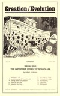
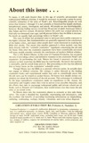
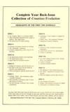
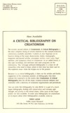
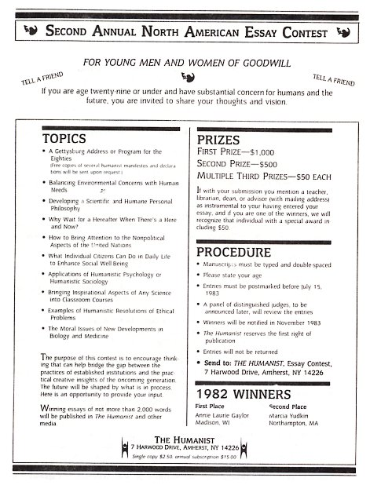

Creation/Evolution
|  |  |  |  |
{kind=link}
{kind=link}
{kind=link}
{kind=link}
Click on an image to view original cover designs and text
Page numbers are listed for original printed format
Contents
Special Issue:
The Impossible Voyage of Noah's Ark
by Robert Moore
Accommodating All Those Animals
About this issue . . .
To many, it will seem bizarre that, in this age of scientific advancement and sophisticated biblical criticism, it would be necessary to provide a point-by-point scientific refutation of the story of Noah's ark. Knowledgeable people are well aware that Genesis 1 through 11 is not scientific or historical but largely mythical, metaphorical, poetic, theological, and moral. All people are not knowledgeable, however. Recent Gallup surveys reveal that 50 percent of adult Americans believe that Adam and Eve existed, 44 percent believe the earth was created directly by God only ten thousand years ago, and 40 percent believe that the Bible is inerrant. No doubt an equally high percentage believe in Noah's ark.
This state of affairs has prompted some to advocate more public exposure to the higher criticism. But fundamentalists are generally opposed to the conclusions of the higher critics, and many other people don't seem interested in studying the Bible that closely. This means that another approach is often needed—one that deals directly with the "scientific creationist" arguments concerning the ark and the flood. Only after the creationist arguments have been scientifically answered will many people consider seriously the conclusions of modern biblical scholars.
This is why Robert Moore, in this issue of Creation/Evolution, has accepted the task of providing a direct and definitive response to the creationist Noah's ark arguments. In performing this task, Moore has found it necessary to take creationists at their word that the Bible must be read literally. He knows this position is untenable, and his article helps prove it. But proceeding in this way has allowed him to better focus on the creationists' scientific errors.
Though Moore uses the Bible as a constant reference point, he actually does not engage in biblical criticism. His critique is rather directed at the leading creationist books and experimental studies that seek to scientifically prove that the ark story can be treated as secular history. He knows how deadly serious creationists are about the historicity of the ark account. This seriousness is evidenced by the large expenditures creationists make on expeditions to Mt. Ararat, the meticulous and weighty tomes they write to answer every possible objection, and the efforts they take to encourage widespread public and private school use of books such as Streams of Civilization, their world history text that treats the ark story as an actual event.
So Moore must take the creationists almost as seriously as they take themselves. The result is detailed but, hopefully, entertaining and informative, with the excellent side benefits of providing fascinating information on shipbuilding, seafaring, zookeeping, zoology, botany, volcanism, and even refuse disposal.
- page 1 -
The Impossible Voyage of Noah's Ark
Robert A. Moore
Suppose you picked up the newspaper tomorrow morning and were startled to see headlines announcing the discovery of a large ship high on the snowy slopes of Mt. Ararat in eastern Turkey. As you hurriedly scanned the article, you learned that a team from the Institute for Creation Research had unearthed the vessel and their measurements and studies had determined that it perfectly matched the description of Noah's Ark given in the book of Genesis. Would this be proof at last—the "smoking gun" as it were—that the earliest chapters of the Bible were true and that the story they told of a six-day creation and a universal flood was a sober, scientific account?
Perhaps surprisingly, the answer is no. Even this sensational find is not enough to validate a literal reading of Genesis. Our continuing skepticism is in the tradition of philosopher David Hume, who wrote that "the knavery and folly of men are such common phenomena that I should rather believe the most extraordinary events to arise from their concurrence than admit of so signal a violation of the laws of nature." As we shall see, the story of the great flood and the voyage of the ark, as expounded by modern creationists, contains so many incredible "violations of the laws of nature" that it cannot possibly be accepted by any thinking person. Despite ingenious efforts to lend a degree of plausibility to the tale, nothing can be salvaged without the direct and constant intervention of the deity.
Building the Ark
The requirements of the story. To make this point clear, let's start at the beginning of the biblical narrative and follow the story step by step. From the moment the impending storm is announced (Genesis 6:7, 13, 17) and Jehovah sets forth the design and dimensions of the ark (Genesis 6:14-16), problems start appearing.
The ark is to be made out of gopher wood according to a plan that calls for the ark to be three hundred cubits long, fifty cubits wide, and thirty cubits tall (450x75x45 feet, according to most creationists. See Segraves, p. 11). It is to contain three floors, a large door in the side, and a one cubit square window at the top. The floors are to be divided into rooms, and all the walls, inside and out, are to be pitched with pitch. Since the purpose of the ark is to hold animals and plants, particularly two of "every living thing of all flesh . . . to keep them alive with thee" (Genesis 6:19), it will have to be constructed accordingly.
- page 2 -
Most creationists simply breeze through this description of the size and requirements of the ark without a second glance ("It is hard to believe that intelligent people see a problem here"—LaHaye and Morris, The Ark on Ararat, p. 248), often with a passing comment about the architectural skill of ancient peoples as manifested in the Seven Wonders of the World. But Noah's boatbuilding accomplishments have not been fully appreciated by his fans.
Ancient shipbuilding. In the first place, the analogy with the Seven Wonders does not hold. Only one, the Great Pyramid of Cheops, comes within two thousand years of Noah's day, and it is really the only one whose construction could conceivably approach the level of sophistication of the ark. But the Great Pyramid did not spring de novo from the desert sands; rather, it was the culmination of over a century of architectural evolution, beginning when the "experimenting genius," Imhotep, inspired by the ziggurats of Babylon, built the Step Pyramid around 2680 BC, passing through some intermediate step pyramids to the Bent Pyramid of Snofru, then the first true pyramid, and finally the masterpiece at Cheop (Stewart, pp. 35-39).
On the other hand, in an era when hollowed-out logs and reed rafts were the extent of marine transport, a vessel so massive appeared that the likes of it would not be seen again until the mid-nineteenth century AD. Before he could even contemplate such a project, Noah would have needed a thorough education in naval architecture and in fields that would not arise for thousands of years such as physics, calculus, mechanics, and structural analysis. There was no shipbuilding tradition behind him, no experienced craftspeople to offer advice. Where did he learn the framing procedure for such a Brobdingnagian structure? How could he anticipate the effects of roll, pitch, yaw, and slamming in a rough sea? How did he solve the differential equations for bending moment, torque, and shear stress?
Ancient shipbuilding did achieve a considerable level of technological sophistication, so much so that marine archaeologists are divided over its history (Basch, p. 52). But this was for vessels that were dinghies compared to the ark, and this skill emerged slowly over many centuries: nearly a millennium passed while Egyptian boat lengths increase from 150 to 200 feet (Casson, p. 17). Despite this, the craft remained a prescientific art, acquired through long years of apprenticeship and experience, and disasters at sea due to faulty design were so persistent that the impetus was strong for a more scientific approach (Rawson and Tupper, p. 2). Obviously, the astronomical leap in size, safety, and skill required by Noah is far too vast for any naturalistic explanation.
- page 3 -
Not only was the ark without pedigree, it was without descendants also. Creationists Kofahl and Segraves tell us that civilization quickly redeveloped after the flood because the survivors carried over the prediluvian culture: Noah lived 350 years afterwards, Shem 502 (The Creation Explanation, p. 227). During this time, people were fanning out and "replenishing the earth," carrying with them reminiscences of the deluge that would someday excite American missionaries from Sumatra to Spitzbergen. Yet Noah's primary contribution to humanity, his incredible knowledge of naval engineering, vanished without a trace, and the seafarers returned to their hollow logs and reed rafts. Like a passing mirage, the ark was here one day and gone the next, leaving not a ripple in the long saga of shipbuilding.
The needs of the animals. As if the rough construction of the ship weren't headache enough, the internal organization had to be honed to perfection. With space at a premium every cubit had to be utilized to the maximum; there was no room for oversized cages and wasted space. The various requirements of the myriads of animals had to be taken into account in the design of their quarters, especially considering the length of the voyage. The problems are legion: feeding and watering troughs need to be the correct height for easy access but not on the floor where they will get filthy; the cages for horned animals must have bars spaced properly to prevent their horns from getting stuck, while rhinos require round "bomas" for the same reason; a heavy leather body sling is "indispensable" for transporting giraffes; primates require tamper-proof locks on their doors; perches must be the correct diameter for each particular bird's foot (Hirst; Vincent). Even the flooring is important, for, if it is too hard, hooves may be injured, if too soft, they may grow too quickly and permanently damage ankles (Klos); rats will suffer decubitus (ulcers) with improper floors (Orlans), and ungulates must have a cleated surface or they will slip and fall (Fowler). These and countless other technical problems all had to be resolved before the first termite crawled aboard, but there were no wildlife management experts available for consultation. Even today the transport requirements of many species are not fully known, and it would be physically impossible to design a single carrier to meet them all. Apparently, when God first told Noah to build an ark, he supplied a complete set of blueprints and engineering details, constituting the most intricate and precise revelation ever vouchsafed to humankind.
Problems for the builders. So Noah grabbed his tools and went to work. LaHaye and Morris tell us that Noah and his three sons could have built the entire thing by themselves in a mere eighty-one years (p. 248). This includes not merely framing up a hull but: building docks, scaffolds, workshops; fitting together the incredible maze of cages and crates; gathering provisions for the coming voyage; harvesting the timber and producing all the various types of lumber from bird cage bars to the huge keelson beams—not to mention wrestling the very heavy, clumsy planks for the ship into their exact location and fastening them. What's worse, by the time the job was finished, the earlier phases would be rotting away—a difficulty often faced by builders of wooden ships, whose work took only four or five years (Thrower, p. 32).
- page 4 -
Faced with such criticism, the creationists quickly convert the humble, righteous farmer into a wealthy capitalist who simply hired all the help he needed (Segraves, p. 86-87). It is estimated that the construction of the Great Pyramid required as many as 100,000 slaves; Noah could have probably gotten by with less (there were, after all, "giants in the earth in those days" according to Genesis 6:4), but what he lacked in numbers he sorely needed in experienced and highly skilled craftsmen. How did he learn when to fell a tree and how to dry it properly to prevent rot and splitting, when the larger beams might take several years to cure (cf. Dumas and Gille, p. 322)? Did the local reed-raft builder have equipment to steam heat a plank so it could be forced into the proper position? A shipyard in nineteenth-century Maine would have been overwhelmed by the size and complexity of this job, yet Noah still supposedly found enough time to hold revivals and preach doomsday throughout the land (Segraves, pp. 87-90).
God told the patriarch to coat the ark, both inside and out, all 229,500 square feet of it, with pitch, and, in fact, this was a common practice in ancient times. But when Noah hurried to the corner hardware store, the shelf was bare, for pitch is a naturally occurring hydrocarbon similar to petroleum (Rosenfeld, p. 126), and we know that oil, tar, and coal deposits were formed when organic matter was buried and subjected to extreme pressure during the flood (Whitcomb and Morris, pp. 277-278, 434-436), so none of it existed in the prediluvian world. Morris (1976, p. 182) tries to say that the word for "pitch" merely means "covering," but not only do all other Bible dictionaries and commentaries translate it "pitch" or "bitumen," but creationist Nathan M. Meyer reveals that all the wood recovered by arkaeologists on Mt. Ararat is "saturated with pitch" (p. 85). Thus it seems that God accommodated Noah by creating an antediluvian tar pit just for the occasion, and we have another miracle.
Finally, our farmer-turned-architect had to confront the gravest difficulty of all: in the words of A. M. Robb, there was an "upper limit, in the region of 300 feet, on the length of the wooden ship; beyond such a length the deformation due to the differing distributions of weight and buoyancy became excessive, with consequent difficulty in maintaining the hull watertight" (p. 355). Pollard and Robertson concur, emphasizing that "a wooden ship had great stresses as a structure. The absolute limit of its length was 300 feet, and it was liable to `hogging' and `sagging' " (pp. 13-14). This is the major reason why the naval industry turned to iron and steel in the 1850s. The largest wooden ships ever built were the six-masted schooners, nine of which were launched between 1900 and 1909. These ships were so long that they required diagonal iron strapping for support; they "snaked," or visibly undulated, as they passed through the waves, they leaked so badly that they had to be pumped constantly, and they were only used on short coastal hauls because they were unsafe in deep water.
- page 5 -
John J. Rockwell, the designer of the first of this class, confessed that "six masters were not practical. They were too long for wood construction" (Laing, pp. 393, 403-409). Yet the ark was over 100 feet longer than the longest six-master, the 329 foot U.S.S. Wyoming, and it had to endure the most severe conditions ever encountered while transporting the most critically important cargo ever hauled. Clearly, God had to imbue this amateurishly assembled gopherwood with some very special properties to fit it for the voyage.
So it should be clear by now why "intelligent people" somehow see a "problem" in the building of the ark.
Accommodating All Those Animals
The requirements of the story. With the huge freighter near completion, the time was drawing near when its colorful cargo would clamber aboard. We now turn to this subject to see if we can learn who and how many made the fateful trip.
Genesis 6:19-20 declares that two of each kind of animal were to be collected and brought on board. This is repeated in Genesis 7:8-9, and it is explicitly stated that this applied to clean and unclean beasts as well as to birds. But Genesis 7:2-3 specifies that clean beasts and birds were to be taken by sevens. Whatever the numbers, it is clear that no animals could be left out. Genesis 7:4 states that "every living substance" that God made was to be destroyed "from off the face of the earth" by the impending flood. Genesis 7:23 repeats the point and adds that only those things with Noah in the ark could survive.
Limiting the cargo to "kinds." Creationists realize that the ark had a limited amount of room and they are aware of the large number of species in the animal kingdom. Therefore, they have employed various tactics to reduce the population needed on board. Probably the most important tactic is to restrict the command to "kinds" rather than species and to argue that the former are much fewer in number than the latter.
A kind (or "baramin" in creationist jargon) is the unit of life originally made by God. Within each kind is an enormous potential for variation, resulting, during the past six thousand years or so, in a large number of similar animals that scientists classify into species. Meyer contends that "He created into the reproductive apparatus of genes and chromosomes the possibility of endless hereditary combinations producing the possibility of endless variety within each `kind' " (p. 37). By juggling the number of kinds, LaHaye and Morris reduce the total population aboard the ark to 50,000 (p. 247), Whitcomb and Morris reduce it to 35,000 (p. 69), while Dr. Arthur Jones squeezes it down to a bare bones total of 1,544 (quoted in Balsiger and Sellier, p. 130).
- page 6 -
Genetic problems. Is this a valid argument? Without going into the details of genetics, it can be stated that every inherited trait, however small, is coded for by one or more genes, and each gene locus may have a substantial number of variants (alleles), which accounts for the great variety observed in a given population. Any specific individual, however, has at most only two alleles per locus—one from each parent. As James C. King writes:
There is good evidence for concluding that every message coded in the DNA exists in any sizeable population in numerous versions, forming a spectrum grading from grossly defective alleles—such as the one for albinism—at one end, through the slightly deviant, to the normal at the other end. And the normal is probably not a single version of the message but a collection of slightly different alleles. (p. 55)
Hence, for a trait such as human pigmentation, "we can visualize not merely a few dozen interacting loci but an array of perhaps a dozen or so alleles at each locus" (p. 60).
From this we can see that the original canine baramin in Eden would have needed a fantastic set of giant chromosomes with alleles for every trait that would someday be manifest in coyotes, wolves, foxes, jackals, dingos, fennecs, and the myriad of minute variations in hair color (twenty-four genes at nine loci), height, face shape, and so forth that are seen in the domestic dog (cf. Hutt). So, too, for the feline kind, within which creationists Byron Nelson (p. 157) and Alfred Rehwinkel (p. 70) both place lions, tigers, leopards, and ocelots as well as housecats. Similar giant chromosomes would be required for the bovine kind, equine kind, and so on.
In the centuries before the deluge, these strange progenitors must have rapidly diversified into their potential species, as the fossil record shows. The equine kind developed not only zebras, horses, onagers, asses, and quaggas but Eohippus, Mesohippus, Merychippus, and other now-extinct species that paleontologists have misinterpreted as evidence for evolution. (Remember that creationists hold that the flood is responsible for the burial of most, if not all, fossil species. Therefore they had to already exist prior to the deluge.)
Then one day, many centuries later, the Lord told Noah to take two canines, two felines, two equines, two pinnipedians—one male and one female each—and put them aboard the ark. The trick is, which does our ancient zoologist choose? A male kit fox and a female Great Dane? A female lion and a male alley cat? An Eohippus and a Clydesdale? Which two individuals would possess the tremendous genetic complement that their ancestors in Eden had, to enable the many species to reappear after the flood? How could Noah tell? Creationist Dennis Wagner tells us that the original kinds degenerated through inbreeding so that their offspring would "never again reach the hereditary variability of the parent" (quoted in Awbrey; my emphasis). Yet the unique couple aboard the ark needed the full genetic potential of the original kind, if not more, for a vast new array of climatic and geographic niches was opened up by the flood.
- page 7 -
Speaking of a hypothetical group of six or eight animals stranded on an island, King says, "Such a small number could not possibly reflect the actual allelic frequencies found in the large mainland population" (p. 107). What, then, of the single pair on the ark?
These criticisms apply to the eight humans aboard the boat as well (Genesis 6:18 and 7:7). Creationists still cling to obsolete stereotypes concerning the "three distinct families of man" descended from Noah's three sons (Custance, p. 204) and even talk candidly of the Afro-Asian "Hamites" being "possessed of a racial character concerned mainly with mundane matters" and subject to displacement by "the intellectual and philosophical acumen of the Japhethites and the religious zeal of the Semites" (Henry Morris, 1977, p. 130).
In reality the ethnic complexity found throughout the world cannot be derived from the flood survivors in the few centuries since that time. The human genetic pool was reduced to five individuals—Mr. and Mrs. Noah and their daughters-in-law (the three sons don't count because they only carry combinations of the genes present in Mr. and Mrs. Noah, unless creationists are willing to admit to beneficial gene mutations). And even if, by some freak coincidence, the five people never had a variant in common, there would still be far too few alleles to account for humankind's diversity. Nearly a third of human genes are polymorphic (Bodner and Cavalli-Sforzi, p. 589), and some, such as the two controlling A and B antigens, with thirty varieties (p. 589), would require substantially more people than Genesis makes available.
If creationists allowed beneficial mutations to produce the thirty different antigens of the A and B series in the HLA region, it would still not solve their problem. Individuals are only heterozygous at a fairly low percentage of loci (5 to 20 percent), while the population could be polymorphic at nearly half the loci. It's questionable how viable an individual would be with a high percentage of heterozygosity (Dobzhansky, Ayala, et al., p. 72).
Creationist Lane Lester recognizes the force of these facts, but he believes that supergenes, several genes acting in concert, would solve the problem (p. 251). This, however, only confuses the concept of supergenes, which control several characters in an organism, not one, and thus cannot produce the observed variety in a population from two parents (cf. Parkin, p. 141). How this horizontal evolution would be realized is even more mystifying. Since each generation would receive a huge set of variants, including maladaptive recessives, a wholly random mix of oddball creatures should result, and the rapid, efficient adaptations necessary in the hostile post-flood climate would prove impossible. How could the arctic fox branch of the canine baramin be assured that only those alleles permitting tolerance to extreme cold would dominate? Why shouldn't freshwater fish hatch offspring manifesting the genes of their saltwater relatives? Furthermore, strangely shaped chromosomes and odd-numbered sets of them (necessary to contain the excess genes) usually disrupt meiotic cell division and produce sterile offspring (White, pp. 172, 261).
- page 8 -
On the other hand, it seems puzzling that such diversification should occur at all, for the originally created kinds were "good" and their "devolution" would "reduce the ability of the animal to survive in nature" (Whitcomb, 1972, p. 80); since the baramins, after all, prospered and replenished in the bleak desolation of post-diluvian Armenia, they should feel comfortable in any environment today. The impetus for speciation is lacking in this model, and there is no reason why, say, a snow leopard should evolve when the superior, better-fit "feline-min" migrated into an alpine environment. We can only conclude with creationist Walter Lammerts that "intelligent design" was activating and controlling this entire process (p. 261).
Taxonomic problems. The taxonomy of kinds is another bewildering subject. The only clear thrust of creationist writing seems to be ridiculing the concept of species, a term usually rendered with quotation marks. We respond with White that, "if we were to give up the notion of species altogether, most discussions in such fields as ecology, ethology, population genetics, and cytogenetics (to name only a few) would simply become impossible" (p. 5).
Aside from this, the creationist baramin can vary anywhere from the level of genus to order (Siegler, 1978)-or even to phylum (Ward, p. 49)—although there seems to be a vague consensus approximating it with the biological family. The most often-cited instance of a kind, for example, is the family Canidae, which has fourteen genera and thirty-five species (Siegler, 1974). But Sciuridae (squirrels) has 281 species, and the genus Rattus (old world rats) has several hundred. Would creationists recognize the eighteen families of bats, with their eight-hundred-plus species, as eighteen distinct kinds, or would they make the order Chiroptera into a single bat kind? Would they distinguish the nearly thirty families (two thousand species) of catfish? At the other extreme are many families with but a single species, and even higher categories, such as the orders Tubulidentata (aardvarks) and Struthioniformes (ostriches) or even the phylum Placozoa, with but one representative. Why did the creator endow rats, bats, catfish, and mosquitos (twenty-five hundred species in family Culicidae) with such adaptive potential but withhold this potential from aardvarks, ostriches, and placozoans, especially when we learn that "each baramin was intended to move toward maximum variation" (Ancil, p. 124)? What becomes of the science of taxonomy under this basis or when the "major categories" (phyla?) are sea monsters, other marine animals, birds, beasts of the earth, cattle, and crawling animals (Henry Morris, 1974, p. 216)?
- page 9 -
The theory of kinds is incoherent and confusing. Since it runs counter to all the known facts of genetics and taxonomy, the burden of proof is upon the creationists to verify it. Where are the fossil baramins? What findings show that such ideal creatures ever existed? If complete sets of kind alleles could survive twenty-four hundred or more years of radiation before the flood, it should be possible to find specimens today with inexplicably large chromosomal complements, perhaps in undiversified families. Unfortunately for "baramin geneticists," studies have been done on such families (cf. Loughman, Frye, and Herald), and nothing extraordinary has been discovered. Still no experiments are forthcoming from the ICR to test its hypothesis. It is, in fact, "armchair science" without a shred of evidence, and we are justified in rejecting it entirely and assuming that "two of every sort" means two of every species.
Leaving Some Things Behind
Nonmarine animals. Another foil used to lighten the ark is the assertion that many, in fact most, species could have survived outside the ark and, eo ipso, did. Creationists somehow do not mind that this gambit is contradicted by Scripture (Genesis 7:4, 23). So, starting with fish and marine invertebrates, the list is expanded to include aquatic mammals, amphibians, most other invertebrates, sea birds, and "land animals that could not have survived otherwise" (LaHaye and Morris, p. 246), culminating in John D. Morris's spectacle of dinosaurs "somehow surviving outside" (1978, p. 201; cf. Whitcomb and Morris, pp. 68-69). From this it is but a short step to the ancient Eastern legend that the giant Og of Bashan survived by wading after the ark! But can the great ship be so easily emptied?
We can dismiss the waterlogged Stegosaurus splashing about for 371 days as an idea as absurd as Og of Bashan's big swim; amphibians and other animals that need some terra firma can be passed by as well. Let's go directly to those creatures that spend all of their lives in the water.
Although creationists seem to think that once you're wet it's all the same, there are actually many aquatic regimes and many specialized inhabitants in each. Some fish live only in cold, clear mountain lakes; others in brackish swamps. Some depend on splashing, rocky, oxygen-rich creeks, while others, such as a freshwater dolphin, a manatee, and a thirteen-foot catfish, live only in the sluggish Amazon. In all these instances plus many more, the environment provided by the deluge waters would have no more suited these creatures than it would have the desert tortoise or the polar bear.
The salinity of the oceans would have been substantially affected by the flood; Whitcomb and Morris lamely address this concern by noting that some saltwater fish can survive in freshwater and vice versa and that "some individuals of each kind would be able to survive the gradual mixing of the waters and gradual change in salinities during and after the flood" (p. 387). We are asked to believe that a storm so vast that the tops of the mountains were covered in forty days was so "gradual" that fish could adapt to these minor fluctuations!
- page 10 -
In reality, although some species can inhabit both fresh and saline waters, most freshwater fish dropped in saltwater shrivel and die, while saltwater fish dropped in freshwater bloat and die. Creationist E. Norbert Smith theorizes that the denser saltwater would not have mixed with the flood's freshwater and thus both varieties of fish could have made it through. But his own experiment, in which a goldfish thoroughly mingled the two types of water in a fishbowl in fifteen days, shows how long the separation would last during the violent shiftings of the earth called for in the creationist flood model.
Marine animals. Arguing over salinity is, however, a moot point, for the environmental hazards of the flood had to be so great that the salt content would be a fish's least concern. We must remember that, according to creationists, the deluge, in one year's time, deposited nearly all of the sedimentary rocks present in the world today. To get some idea of how muddy this would be, we should note that creationist flood theorists maintain that the original ocean basins were greatly enlarged to their present depths to receive the retreating flood waters (Whitcomb, 1973, pp. 35, 38); therefore, the quantity of water in the oceans is basically equivalent to that of the flood. This volume is 1,350x 106 cubic kilometers. The volume of Phanerozoic sedimentary rock ("flood deposits") is 654 x 106 cubic kilometers (Blatt, Middleton, and Murray, p. 34). The ratio of water to rock is thus 2.06:1. Try mixing two parts water to one part sand; double or even triple the amount of the water, and then stick your pet goldfish into the muck and see how long it lives!
Then, too, most of the world's volcanic activity, sea-floor spreading, mountain-building, and continent-splitting was supposed to have occurred at this time as well, filling the seas with additional huge volumes of rock, ash, and noxious gases. Undersea volcanoes usually decimate all life in the surrounding area (Buljan), and their extent had to be global during this terrible year. The earth's prediluvian surface would thus have been scoured clean, and forests, multi-ton boulders, and the debris of civilization hurtled about like missiles. Finally, this tremendous explosion of energy would have transformed the seas into a boiling cauldron in which no life could possibly survive.
Accurate calculations are nearly impossible, given the creationist penchant for vagueness; but by multiplying the amount of heat generated during a typical volcanic eruption (cf. Macdonald, p. 60; Bullard, p. 288) by the total volume of such material (Macdonald, pp. 350-351)—most of which would have poured out in the few months under consideration—we arrive at a mind-boggling 3.65 octillion calories. This is enough to raise the temperature of the oceans by more than 2700°C! Obviously, nearly any concessions, any margins of error, can be granted to the creationists within their geological framework and the flood water would remain a churning, boiling inferno, easily accomplishing God's intention of destroying the world.
- page 11 -
Yet amidst all of this, creationist icthyologists aver that life went on as usual, with a few minor adjustments to the "gradual" changes. The salmon swam to their (long-vanished) riparian breeding grounds that fall as they always had; sea anemones clung to their rocky perches, which were on the beach one month and the abyssal plain the next; blue whales continued to strain for krill even though their baleen plates were choked with mud; corals, which grow in clear, shallow water, somehow grew anyway; hapless bottom dwellers, their lives carefully adjusted to certain conditions of pressure and temperature, suddenly saw the former increase by more than 5,000 pounds per square inch and the latter fluctuate in who knows what directions.
Backhaus tells us that "aquatic species would pay for any attempts at acclimatization with their lives or, at any rate, would not survive for very long" (p. 194). Most are highly sensitive to changes in salinity, temperature, light, oxygen, and even trace elements (cf. Bond; Hill). The conclusion is unavoidable: barring a special miracle from God, nothing but the hardiest microorganism could have survived the flood outside the ark.
Of course, the omnipotent deity could have performed several million individual miracles and preserved representatives of the invertebrates, fishes, amphibians, and even dinosaurs outside the ark; but, if so, why not extend the coverage to the few remaining terrestrial vertebrates and dispense with the boat altogether? Again, by some freak combination of luck, we may imagine one male and one female octopus surviving the disaster and somehow encountering each other between Japan and California to renew their species, but the only way Noah, as designated curator of the world zoo, could have guaranteed their persistence was by bringing them aboard. We must conclude, therefore, that every species of the animal kingdom had at least two members within the ark.
Adult animals. So now we are back to fitting all the animals on board. Yet creationists still have another method of saving space. They postulate that many full grown adult animal forms were left behind and that only young and thus smaller specimens were taken or—the ultimate economy—that eggs were sufficient for the preservation of the dinosaurs (John Morris, 1980, p. 66). Most zoologists, however, would agree with Neill when he writes that "the mortality rate is usually very high among seedling plants and young animals; but once the critical juvenile stage is passed, the organism has a good chance of reaching old age" (p. 388). In birds, for example, as many as 80 percent die before reaching maturity (Dathe)—facing everyday hazards. Furthermore, the young of many species cannot survive without parental care and feeding (imagine two tiny unweaned kittens shivering in their stalls!), and, even if they can, the lack of a normal social environment often results in severe behavioral disturbances.
- page 12 -
The luckless animals aboard the ark were confronting the gravest challenge to their endurance ever known, and they needed to be the strongest, healthiest, and most virile representatives their species had ever produced; juveniles would not do. As for the dinosaur eggs, how did Noah know whether one would yield a female, the other a male—or even that both were fertile? And since no eggs require a year's gestation, he soon would have had a hoard of fragile hatchlings on his hands.
Plants and seeds. Noah's responsibilities did not end with animals, for without plants all life would perish. Whitcomb and Morris grant that many seeds were aboard the ark in the food stores (p. 70) but quote fellow creationist Walter Lammerts to the effect that "many thousands" of plants survived either upon their own "arks" of floating debris or simply by experiencing a rather thorough watering and then sprouted again as soon as the sun came out. George Howe, too, referring to an experiment where three of five species showed germination after twenty weeks of soaking in sea water, concluded that the survival rate through dormancy would have been high (December 1968). However, two of these three sprouted only when their seed coats were scarified (cut). This presents a special problem. The abrasive force of the deluge would have easily scarified the seed coats, but this would have been too soon. The seeds would have sprouted under water and died. But after the flood waters receded and the seeds were exposed to dry land, what would guarantee their being scarified then? Howe's experiments failed to properly duplicate the conditions required by the flood model and hence his work offers no support for seed survival during the deluge.
In reality, seed dormancy is a complex affair and involves metabolic and environmental prerequisites for entrance into and recovery from the state as well as several forms of quiescence. The vast majority of seeds which become dormant do so in order to endure cold temperatures or prolonged drought, and in the warm flood waters most would germinate immediately and then drown for lack of oxygen (cf. Villiers).
The waters weren't the only thing that would bury them, however, for huge deposits of silt and lava would have been laid down as well, entombing entire forests and paving the way for coal and oil formation. Today the surface of the ground consists of 80 percent Phanerozoic rock and only 20 percent Precambrian ("pre-diluvian"), the latter found mostly in large shields and entirely absent in many areas (Kummel, p. 87). These shields themselves would have been eroded to the bedrock by the flooding ("the vegetation would have been uprooted . . . leaving no protection at all for the exposed soils"—Whitcomb and Morris, p. 261), and in the rest of the world the few seeds that may have survived would have faced the task of pushing up a sprout through thousands of feet of mud and rock.
- page 13 -
Floating is also unsatisfactory as a means of riding out the storm. Less than 1 percent of sermatophytes produce disseminules which drift for as long as one month, much less a year (Gunn and Dennis, p. 4). And although many debris rafts could have been torn loose during the early days of the storm, such vessels tend to break up in rough water (Zimmerman, p. 57), so they would not have lasted very long. If somehow a few of them did, how would they know where to unload their precious cargo afterward?
Suppose, for example, that a hefty chunk was torn loose from a densely grown forest and managed to swing through a sparse desert area, where such rafts presumably wouldn't form, to pick up seeds from a few rare cacti. After a year at sea, what is the likelihood that these seeds would be dropped in an area where the temperature, rainfall, soil, and light would be suitable for their growth? As the retreating waters evaporated, the topsoil would become saturated with salts much like the beds of dry lakes in arid regions, and all but the hardiest halophilic plants would find the ground too toxic for any growth. Seawater contains thirty-five grams of salts per liter, and most plants cannot tolerate one-tenth this concentration (Levitt, p. 371); the residue left in the soil would clearly be excessive. Finally, assuming that some seeds did reach a survivable spot, how long would their flowers have to wait before the birds and insects arrived from Ararat to cross-pollinate them? Could the many species indigenous to the New World hold on while the transatlantic trip was made?
Isaac Asimov observes that the ancient Hebrews did not regard plants as alive in the same sense animals are (p.49); therefore they no doubt had no problem picturing olive trees enduring a year's drowning and sprouting immediately afterward. Today's fundamentalists should have learned some botany since then, but they still carry on about the "hardiness" of olives (Whitcomb and Morris, p. 105), and Nathan Meyer knows of a bristlecone pine that was five hundred years old when the big rains came and is still living (p. 42)!
If we are to take the deluge seriously, we must be much more skeptical about such stories. The creationists need to soak seeds in very deep, muddy water for a year and then plant them in unconsolidated, briny silt in an unfavorable climate without insect or avian pollinators to see what happens. Have their mathematicians, so skilled at calculating improbabilities for protein formation, ever determined the odds of a seed enduring the flood and then landing in the right soil and climate rather than being swept out to sea by the retreating waters or coming down in Antarctica?
It seems that Noah needed to have not merely "many" seeds but many samples of all the seeds and spores of the 420,000-plus species of plants in order to guarantee their survival—or else we must tally up a few million more miracles of divine preservation.
- page 14 -
Sizing Up the Load
Getting an accurate count. We can finally begin to make some calculations. Robert D. Barnes lists the number of living species for each phylum, ranging from the sole member of Placozoa to the 923,000 in Arthropoda (pp. 12, 85-88). Using his figures, we arrive at a total of 1,177,920 species.
In addition, there are many animals that are as yet unknown. Wendt estimates that only 2 percent of all the parasitic worms are known, which would easily add another million species (p. 83). This includes as many as 500,000 nematodes, although only 15,000 have been described (Levine, p. 1). Ten thousand new species of insects are discovered every year, yet still only a small fraction of those in existence have been found (Atkins, p. 45).
All of those creatures were known at one time, for Adam gave them all names (Genesis 2:19-20), and, since they exist today, they must have been on the ark. But we shall be extremely generous to the creationists and add only 500,000 undiscovered species to our figure of 1,177,920—thus giving a mere 1,677,920 species with which Noah had to contend.
To this number, we must add the myriad of extinct prehistoric animals, which creationists assure us were alive at the time of the flood, making tracks in the Paluxy River, and which were known to Job afterward (John Morris, 1980, p. 65). This would vastly increase the numbers, since "only a tiny percentage of the animal and plant species that have ever existed are alive today" (Kear, p. 10). However, since creationists do not believe in transitional forms, we can again give them the benefit of the doubt and add to our total only the 200,000 different fossils that have been described. This brings the number to 1,877,920 species or animal pairs that were to be boarded onto the ark.
Of course, we can't forget that Genesis 7:2-3 (particularly in the Revised Standard Version) makes it clear that only unclean animals come in single pairs, male and female; the clean animals and birds come in seven pairs, male and female. That means fourteen of each clean animal and each bird. But since figures for the number of clean animals are hard to find, we will have to let creationists off the hook and ignore them. Birds are another story. There are 8,590 species of birds. Since they have already been calculated into our figure of 1,877,920 species or 3,755,840 individual animals on the ark, we need only six more pairs of each species of bird to make it come out to seven pairs. That brings our count up to a grand total of 3,858,920 animals aboard the ark—two of each species, except birds which number fourteen each.
Problems with the biblical limits. This figure may seem excessive at first glance, but in reality it is so small as to be unrealistic. Many animals need more than a single pair to reproduce. Bees and other hymenopterans live in colonies and "apart from the community [they] cannot properly function or survive" (Lindauer, p.128). Many types of flies engage in reproductive swarming. Some birds will not mate unless they are part of a flock (Conway, p. 205; Kleiman, p. 255), and many fish spawn only as part of a school (Bond, p. 434). In fact, "animals which unite into colonies for purposes of reproduction are by no means rare phenomena" (Wendt, p. 118).
- page 15 -
The whole process of mating, egg-laying, gestation, and the survival of the fragile young is a risky business that can easily be aborted by many factors, including predators, disease, exposure to the elements, and so on. In many species of spiders, given the chance the female will kill and devour the male before they mate; on the ark, the hapless husband would have to be particularly fleetfooted or his wife would unwittingly exterminate her species! Infanticide is another significant concern and occurs frequently even among primates. Dayflies, so named because their mature stage lasts only a few hours, form a tiny cloud of dancing males trying to attract females, with a successful mating rate of at most 1 percent (Wendt, p. 135). Even the prodigious rabbits fare poorly outside many-chambered warrens, the work of numerous individuals (Andrewartha, p. 134).
Locating one's mate can also be tricky. The Sumatran rhino depends on communication points in its range, and, if it can't visit these, it loses contact with others and reproduction doesn't occur (Lang). The tick, Ixodes ricinus, mates only on a sheep which must browse through a field and by chance pick up both a male and a female tick—and even then these poor crawlers can't find one another if they are too far apart on the sheep's body (Andrewartha, p. 55). Imagine the microscopic parasites of a bull elephant, limited to two per species by Sacred Writ, searching for each other on the vast cosmos of their host's body!
Competitive social behavior between males is often necessary to achieve successful androgen levels (Kleiman, p. 247); an isolated male is effectively impotent. Individual incompatibility between a pair of animals is another commonplace, often thwarting the most determined zoo keepers' efforts at breeding.
All told, with but a single male and female apiece, or even seven pairs of birds and clean animals, every species on earth would be well below the margin of endangerment, and the chances of successful survival, especially in the devastation of the post-diluvian world, would be so small that they can be considered nil. Conservation biologists estimate a minimum size of fifty for a species's survival, with 150 or more being a more realistic figure (Franklin). Hence our grand total could be multiplied many times and still represent only the most tenuous hold of life on earth.
Was there room enough on the ark? It contained 450 x 75 x 45 = 1,518,750 cubic feet of space if it was exactly rectangular with no curve on the keel or elsewhere. Part of this was occupied by the quarters for Noah and his family. Room had to be provided for the orderly compartmentalization of plants and seeds. An immense storage area for food, fresh water, and waste was needed. Also, the ark had to have corridors throughout, large enough for the passage of the bulkiest animals to their stalls when boarding and unboarding and at least large enough for the crew to pass into the most remote corners of the vessel. There would finally be a considerable volume lost in wood alone; the decks, larger cages, supporting beams, and so on would occupy a considerable space. The six-masted schooners had keelsons 7 feet high and 8 feet wide running the full length of the hull and often used 20 x 20 inch beams (Snow); the switch to iron construction increased cargo capacity by upwards of 20 percent (cf. Hutchins, p. 443).
- page 16 -
If we conservatively allow all of these requirements to consume 30 percent of the space, this leaves 1,063,125 cubic feet to be divided among the nearly 4 million animals, resulting in a mere 0.275 cubic foot per individual! No arrangement of cages, however ingenious, no high-density packing of minute invertebrates, could squeeze everyone into this amount of room. For comparison, a sable antelope or red hartebeest needs a crate of 57 cubic feet for the brief journey from capture to quarantine; a zebra, 77 cubic feet; medium-sized giraffe, 99; eland, 110; hippopotamus or small elephant, 214 (adapted from Hirst, p. 121). These seven species alone, male and female, require more than 5,600 times the allotment per specimen for a trip that rarely exceeds three days. For the 371 days of the flood, the area would need to be greatly enlarged—for crowding and lack of exercise would be extremely detrimental, if not fatal, to most (cf. Young, p. 137; Voss, p. 157). Many birds must have high roofs with room to fly, and even a pond snail needs a gallon of water for adequate living (Orlans, p. 85).
Probably the greatest space requirements are involved in keeping aquatic organisms. Many fish swim continually, even when sleeping, and the general rule is 100 gallons of water per pound of animal weight (Atz, p. 180). Gruber and Keyes state that "the primary cause of mortality in captive pelagic sharks is that their living space is not large enough" (p. 376). Marineland of the Pacific has an 80 x 22 foot circular whale stadium of 640,000 gallons, containing four small whales and some dolphins; the many large whales would occupy aquaria "the size of a football stadium" (Hill, p. 151).
All of this would have constituted a tremendous weight. Filby would put a mere hundred tons of animals aboard, with a few thousand tons of supplies (cited by Montgomery, p. 58). However, a mature sheep (the creationists' average-sized animal) weighs 120 pounds, and at this rate the vertebrates alone would exceed 4,500 tons. When the huge volume of food and drinking water, the hundreds of thousands of gallons in the aquaria, and the giant dinosaurs and prehistoric mammals are included, it is clear that the ark would have sunk like a brick the moment it was launched.
At this stage, further discussion of the overcrowding becomes rather pointless. We leave the conundrum in the laps of the creationists, recalling the words of theologian Johannes Weiss, "The apologists . . . can get the better of any historical result whatever" (quoted in Schweitzer, p. 234). Perhaps God performed a miraculous miniaturization on the animals; as the flood legend takes on more and more of an Alice-in-Wonderland air, anything becomes possible.
Before moving on, we must briefly take note of an argument so popular that nearly every ark theorist uses it: that the interior of the ark could have held literally hundreds of standard-sized railroad stock cars and thus was quite roomy.
- page 17 -
But while the figures for rail car size and capacity are cited with fair accuracy, ignored is the federal law which requires a train on a long haul to stop every twenty-eight hours, to unload the stock, to feed and water them, and to give them a five-hour rest period (Ensminger, p. 1062). This may be just a minor inconvenience to American ranchers, but it would have been quite impossible for Noah. Thus the analogy collapses. The fact that every creationist has triumphantly trotted out his train statistics, yet overlooked this decisive flaw, demonstrates once again the sloppiness of creationists' research.
Gathering the Cargo
Animal migration. Having drawn up a passenger list, the next order of business is to gather them all at dockside. At this point, the creationists themselves are unable to propound any sort of scenario in which Noah and his sons could perform such a feat, so they resort to the convenient dumping ground of the inexplicable: miracles. God himself intervened by implanting in the chosen pair from each species the instinct of migration, and by this mechanism they gathered from the four corners of the world and headed for the Plains of Shinar (Whitcomb, p. 30). LaHaye and Morris (p. 251) even spice things up with an added ability to instinctively "sense imminent danger," but in any event a cheetah here, a penguin there, here an ant, there an ant, all dropped what they were doing and made a beeline for the ark. That this is not too farfetched we can see today, say creationists, for many animals still migrate, and this is the most "scientific" explanation available for their ability to do so.
A closer look reveals that a miracle is indeed called for in the gathering of the animals, but it is a much larger and more complex one than merely imparting "premonition" and migration. In the first place, a glance at Jarman's Atlas of Animal Migration shows that of all the birds, fish, and terrestrial animals whose paths are shown, only one, the common crane of southern Russia, currently migrates to the Mesopotamian Valley. Therefore, God not only programmed the animals to go to Noah's place before the flood, but afterward he deprogrammed most of them and rerouted all the rest except the common crane—a reverse miracle. Incidentally, it is noteworthy that many aquatic creatures migrate, a faculty whose origins the creationists find incomprehensible unless these creatures were also sent to the ark.
Climatic zones. However accurate their suddenly acquired instinct, for many animals it could not have been enough to overcome the geographical barriers between them and the ark. The endemic fauna of the New World, Australia, and other remote regions, as well as animals unable to survive the Near Eastern environment, would find the journey too difficult no matter how desperately they yearned to go.
- page 18 -
Flood theorists are unperturbed by such obstacles, however, for they simply gerrymander the map to give us an antediluvian world of undivided continents and a uniform, semitropical, spring-like climate, and—presto!-all the animals become evenly distributed and hence within a short stroll of the ark (Whitcomb and Morris, p. 64). But this resolves one question only to raise another: in such a world, where did the animals which are found today in the arctic, desert, alpine, and other specialized postdiluvian niches live? The polar bear, caribou, walrus, yak, snow leopard, and many more would suffocate in the warm tropics; many desert dwellers could not have endured the excessive humidities they would have encountered.
Creationists would no doubt respond that these creatures evolved within their "kinds" after the flood, but we have already found that concept so vague as to be meaningless. Besides, since in their chronology the ice age immediately followed the deluge and started freezing woolly mammoths, the rapidity of intrakind evolution would be far greater than any Darwinist ever dreamed possible and there could be no logical justification for continuing to rage against interkind transformation. On the other hand, there may have been a small desert here, a tiny tundra there, to house these specimens for the few centuries from the creation to the time their regular habitats appeared, but that puts us back on square one wondering how they struggled through the heat and humidity to the ark.
Other creatures had it even rougher. Hundreds of species live only in caves and are so sensitive that many cannot survive in caverns just slightly different from their own and many may be killed by exposure to light (Vandel, pp. 37, 399). For these cavernicoles, even a very short journey from their homes would prove impossible. Could Noah have fetched them himself to save them from a fatal march? Could he have distinguished the 293 species of pseudoscorpions and picked out a male and female of each?
Aquatic animals would also find the trip challenging. Did all the representatives of the oceans, lakes, and streams overcome their sensitivities to normally lethal changes in environmental conditions and swim up the ancient Euphrates or the "mighty Hiddekel" to the docks nearest the ark? How did the many sessile species, from sponges and corals to anemones and barnacles, detach themselves and waddle through however brief a trip it may have been? A problem analogous to that of terrestrial arctic and desert dwellers would be the exotic inhabitants of the abyssal and hadal zones of the ocean depths. In this instance, too, creationists have postulated only shallow seas before the deluge, precluding the very existence of deep-sea dwellers. In reply, we again insist either that such accelerated evolution occurred that creationists have argued themselves out of a job or else that there was a trench somewhere in the "shallow seas" specifically for these organisms.
- page 19 -
Parasites and diseases. Some important complications arise with that extensive group of organisms known as parasites. Hundreds of thousands of species are known, and a very large proportion of them are host specific and must spend all or part of their lives within the host animal. Therefore the single pair of animals from each species had to carry aboard the ark the parasites that were adapted to living within or upon them. Although many of these are harmless freeloaders, others are pathogenic and often fatal to their host. Yet the fact that such organisms exist today demonstrates that they survived the flood, and the fact that they must inhabit their host shows how they survived.
The example of Homo sapiens will show the seriousness of the problem. Humans are sanctuary to over one hundred parasites, and many are host specific. Although the four species of human malarial parasites undergo sexual development in mosquitos, they must undergo further development in humans. Hence, a member of Noah's family must have had malaria at some point in his life and must have remained infected after the flood until the earth became sufficiently repopulated that the parasite passed to others. In similar manners, the vectors of many other parasitic infections are also specific to humans, such as the tapeworms Taenia saginata and T. solium, the intestinal worm Ascaris lumbricoides, the hookworm Leishmania tropia, the pinworm Enterobius vermicularis, three agents of filariasis, two species of Schistosoma, three species of lice, and many dozens more (Jones). Also, of course, the five types of venereal disease bacteria cannot survive outside their human abode.
These eight unfortunate souls were afflicted with enough diseases and discomforts to support a hospital—all as their part in "preserving life" through the great flood. And nearly every other animal on board—from Shem's lice to the right whales—had parasites of their own to cope with. What remarkable creatures they must have been; in order to ensure their survival they ha, d to be the strongest, healthiest, most fertile pair possible, while at the same time they had to carry a full set of debilitating parasites so as to guarante, , , , , e their survival.
How was Noah assured that the proper complement of viable tapeworms was present in each rodent and each lizard waiting to come aboard? How could he confirm the presence of microscopic fauna in their tiny stalls? If a prospective passenger was lacking an essential flea, what could be done? Was there opportunity to correct any errors?
Verifying sex. If just one of the teeming hoard of animals turned out to be sterile, that species would become extinct. Could Noah verify everyone's fertility? For that matter, could he even verify that the couple on the gangplank were male and female, when a great many animals, including 30 percent of the birds and even some mammals, are sexually monomorphic and cannot be distinguished without modern veterinary techniques or even hormonal analysis? Most fish are indeterminant as juveniles and will only become male or female when mature (Bond, pp. 415-416), while some female worms will change into males when starved (Hapgood, p. 78). No wonder Segraves proposes a miracle here (p. 16).
- page 20 -
Creationists insist on a strictly literal interpretation of Genesis; so when those animals which reproduce by asexual budding, or the over one thousand thelytokous (all-female) species from insects to lizards, converged toward the ark, another special miracle would have been called for to fulfill the explicit command to take both male and female aboard. By the time Noah encountered the sea star, Asterina gibbosa, which begins life as a male and eventually becomes female, he must have been ready to throw in the towel in frustration.
Difficulties of travel. The journey of the animals presents other remarkable facets. They traveled over hill, over dale, through the dense jungles, and across the mighty Edenic rivers without a single accident. No limbs were broken, no drownings occurred. Amazingly, not one perished at the paws of a predator; from the tastiest earthworm to the freshest frog, all marched past the hungry inhabitants of the forest with impunity. Orr stresses that "migration is hazardous. For species that engage in long migrations it may be a great strain on the bodies of the participants. There may be extended periods without food as well as long hours of travel. . . . Attrition through predation may be higher during migration" (p. 239). He also notes that getting lost can be a problem, especially for those traveling singly as opposed to flocks and herds (pp. 175, 240). But if the divine instinct often fails today's travelers, what chance did such unlikely wayfarers as eyeless cave fish, giant sloths, and sea urchins have of locating a specific acre in Asia? St. Christopher was clearly in his finest hour, performing literally thousands of miracles every day.
The botanical garden. Perhaps with a vivid imagination we can picture this divine Pied Piper saga in action; but no such excuse can save Noah from his responsibility for gathering the seeds of the nearly half million plants that survived the flood. No premonition, however urgent, could cause a pine cone to commence rolling toward the ark; someone would have to go get it. Our biblical botanists would have to be able to identify fertile seeds and spores, find them at the proper season, and make sure that the storage area aboard ship would be suitable. In the damp depths of the ark, most seeds would either rot or sprout and then die for lack of nutrients and light. How did Noah prepare and maintain the special low-humidity containers necessary to ensure their dormancy? How did he control insects, rodents, and fungi? Seed storage is a complex technology and, without proper techniques, "no seed can maintain its viability for long" (Thomson, p. 100).
In addition, God told Noah to gather food for the various animals (Genesis 6:21), many of whom, as we shall see, have highly specialized diets. Hence, even if the animals could reach the ark unaided, an overwhelming burden would be placed upon our heroes with regard to the plant kingdom.
- page 21 -
Boarding the ark. At last this remarkable menagerie gathered before the gaping door of the great ship. Still the protective aura hovered over them, for natural enemies stood side by side without conflict: the mighty carnivores ignored countless opportunities to fill their stomachs; the panicky impulses of animals in strange surroundings were subdued; even the centipedes and beetles escaped extinction from the chance misstep of the elephant. This surreal tranquility extended to animals that were not among the elect—for the sounds and smells of the teeming throng undoubtedly piqued the interest of the denizens of the surrounding jungle, yet none of them took advantage of having a meal spread out before them on a silver platter.
The peaceful scene was about to come to an abrupt end, however. All at once the command went forth to board the ark, and pandemonium erupted. The Bible emphasizes that all the animals and human passengers entered the ark on the same day (Genesis 7:11-15). Simple division of our grand total shows that 44.66 creatures had to dash up the gangplank and through the door every second in order to fill the ark within twenty-four hours! Even if we grant that the parasites could hitch a ride with their hosts and many insects could go through at once, and if we simply count the vertebrates (including the seven pairs of birds), this still averages out to two per second. This was not merely a mad scramble for the door but involved weaving through the intricate maze of corridors until the correct cage—that one specific stall exactly designed to meet that animal's needs—was located, entered, and secured. It includes Noah's unenviable task of getting clams and piranhas, barely visible mites, and killer whales, into their quarters. How did our overworked crewmen wrestle all the huge aquatic creatures from the river to their aquaria in half a second, especially when improper handling can severely injure such animals? How did the "migratory instinct" guide the panicky porcupine to the right stall in the twinkling of an eye?
Looking back over this entire wonderful journey, from the flicker of illumination that separated two grazing gazelles from their herd to the frantic stampede to their stalls, one can only conclude that Jehovah should have had access to a Star Trek script and simply beamed the animals aboard, saving everyone a whole heap of trouble and conserving a substantial supply of his own mirific energy.
Surviving the Flood
Those that died. No sooner had the last snail slithered aboard than the Lord accommodated Noah once again by supernaturally shutting the enormous door of the ark (Genesis 7:16). From this moment on, the die was cast, and everyone outside the ark was doomed. Sinful man and all his works were to be washed away.
- page 22 -
It is worthwhile to pause here and wonder what became of this lost world, especially when we learn that it may have had as many as twenty-five billion inhabitants and a fairly high cultural level (Henry Morris, 1977, p. 80). Yet aside from some supposedly human footprints in early strata and two insignificant artifacts (Balsiger and Sellier, pp. 44-45), not a trace of this civilization or its renowned giants has ever been found. All of the hominid fossils that have been found—from Olduvai Gorge to the caves of France—represent degenerate postdiluvian tribes (Kofahl and Segraves, pp. 130-131). Henry Morris (1974, p. 119) suggests that these billions of people fled to the mountains and thus escaped burial while their cities were entombed so deeply that they can never be found. What remarkable tenacity these prediluvians had, clinging to the mountain tops even though they were submerged for five months as the waters surged "to and fro"! And their cities wouldn't have been buried any deeper than the ocean floor dwellers whose fossils are exposed abundantly. With Nelson, we are forced once again to the deus ex machina: "It was God's deliberate purpose to leave no vestige of prediluvian man remaining" (p. 161, his emphasis).
The flood not only destroyed wicked humanity. All of the innocent creatures on earth suffered and died in this God-ordained. cataclysm (Genesis 7:21-23). Why? Whitcomb and Morris reveal that "sub-human creatures" which have been used as instruments of sin are punished (p. 465). But surely every animal on earth, many of which had never even seen a human, didn't deserve to be summarily drowned. What cruel hand of fate selected the two of each species to board the ark, leaving all the others behind without hope? These issues are beyond the scope of this article, but we merely mention them to indicate some of the many additional quandaries a literal acceptance of the flood story entails.
The size and effects of the flood. We have alluded to the immensity of the deluge already, but to really appreciate it we should savor some of the remarks of the experts:
The Flood was accompanied by violent movements of the earth's crust and by volcanic activity of momentous proportions. Tremendous tidal waves and rushing currents scoured and deeply eroded the continental surface. Entire forests were ripped up and transported large distances to be dumped where the currents slowed. (Kofahl and Segraves, p. 226)
Even after the first forty days, when the greatest of the rains and upheavals diminished, the Scriptures say that the waters "prevailed" upon the earth for one hundred and ten days longer. This statement . . . would certainly imply that extensive hydraulic and sedimentary activity continued for a long time, with many earlier flood deposits perhaps re-eroded and reworked . . . . The only way in which land could now appear again would be for a tremendous orogeny to take place. Mountains must arise and new basins must form to receive the great overburden of water imposed upon the earth. (Whitcomb and Morris, pp. 266-267)
- page 23 -
Yielding of the crust at even one point, with resultant escape of magmas and water or steam, would then lead to earth movements causing further fractures until, as the Scriptures portray so graphically, "the same day were all the fountains of the great deep broken up" (Genesis 7:11). Truly this was a gigantic catastrophe, beside which the explosion of the largest hydrogen bomb, or of hundreds of such bombs, becomes insignificant! (Whitcomb and Morris, pp. 242-243)
The worldwide ocean of the Genesis flood was swept by wind storms that would make modern tornadoes seem like a zephyr. (Schmich, p. 121)
There are perhaps five hundred active volcanoes in the world, and possibly three times that many extinct volcanoes. But nothing ever seen by man in the present era can compare with whatever the phenomena were which caused the formation of these tremendous structures. (Whitcomb, 1973, p. 85)
For once we can agree that creationist rhetoric has not been exaggerated. A cataclysm that could accomplish the largest percentage of the geological activity in earth's history in one year—events that uniformitarians assign to billions of years—would be so overwhelming that we cannot begin to imagine what it would be like. Yet into the jaws of destruction sailed a rickety wooden boat—oversized, leaky and unsound, carrying a cargo whose safety and protection was all important! It is utterly inconceivable that it could have survived even a few days of this maelstrom without being blasted to splinters—unless it was protected by the unceasing intervention of the deity.
The survival of the ark. Curiously, when the talk turns to the fate of the ark, diluviologists suddenly paint a much rosier picture. Whitcomb, for example, has read that tsunamis (so-called tidal waves) in the open sea are of such low amplitude as to be hardly noticeable and would "thus have had very little effect on Noah's Ark" (1973, p. 73). But why mention these and omit wind-driven waves, which have been known to exceed one hundred feet in an ordinary hurricane? The winds that would make tornadoes "seem like a zephyr," blowing over the unlimited, unobstructed fetch of the entire globe, would have generated waves many times higher; arkeologist Meyer suggests a height of several miles (p. 57)! And what sorts of waves would be produced by the breakup of the "fountains of the great deep," the splitting of the continents, and the worldwide orogeny? The shock waves from present-day submarine earthquakes have been known to damage or destroy vessels far from land (Thrower, pp. 90-91).
Furthermore, there were at least two occasions when the ark was not in the open sea. As she sat on the Plains of Shinar, her first encounter with the deluge would most likely have been a mountainous tidal wave or flash flood or both, smashing her to pieces just as easily as it uprooted "entire forests." At the other end of the trip, the vessel was slammed into the side of Mt. Ararat and battered a few more days by the violently receding waters.
- page 24 -
There were other hazards as well. Volcanic ash and molten boulders filled the air, while at least in the early stages of the storm vegetation rafts and the debris of civilization shot through the water like torpedoes. For most of the time, the ark was the only object projecting above the sea's surface, and, as such, it must have been subject to a continuous barrage of lightning, producing fires, splitting beams, and electrocuting soaked animals.
Then we have the puzzling currents of the flood, which flowed hither and yon, burying some places one week and uncovering them the next. For example, creationists tell us that the Llano Uplift of Texas remained a haven for men and dinosaurs while eight thousand feet of sediment was being deposited nearby (John Morris, 1980, pp. 182-185). Hence the ark should have also encountered swift-moving, riverlike currents and whirlpools, with frequent collisions against the outcrops that broke the surface. Noah neglected putting any kind of steering mechanism on the ship, leaving it completely at the mercy of the savage storm (Segraves, p. I I).
In what must be a first, creationists Balsiger and Sellier actually conducted an experiment (pp. 117-118). They had a scale model of the ark tested in a hydraulics lab and concluded from this that it could have withstood waves of over two hundred feet before capsizing. But even higher seas must have been commonplace in that fateful gale, quickly sending the boat to the bottom. It's a moot issue, however, since the entire test is vitiated by overlooking the ship's excessive size, which would have rendered it unsound in any weather.
Arkeologists cannot have their cake and eat it; they can't have a cataclysm of the magnitude of the biblical flood and still expect the ark to survive. Each year approximately two thousand ships succumb to the forces of the sea, in conditions that are like the horse latitudes compared to the deluge. These include structurally sound steel freighters larger than the ark, some of which have vanished so fast in a "mere" hurricane that people have even suggested a paranormal force behind their destruction (cf. Kusche, pp. 246-247). Who can forget the 229,000 ton supertanker, Amoco Cadiz, which ran aground off Brittany in March 1978 and was quickly broken in two by swells that were calm compared to those lashing Mt. Ararat? Yet the ark was adrift, without rudder or sail, for 150 days (Genesis 7:24) in a storm that would make "hundreds of hydrogen bombs" seem insignificant!
The fate of the cargo. But mere survival is hardly the proper criterion of the voyage's success. The animals, many of them so sensitive that they have never yet been kept in zoos, had to make it through in good enough condition to reproduce and to spread over the earth. Hirst tells us that "wild animals should be subjected to a minimum of jolting and rolling during transport. . . . Rapid acceleration, sharp cornering, and sudden deceleration are to be avoided at all times" (p. 124). Broken legs and necks, bruises, and cuts are important considerations in even short hauls by truck, not to mention the panic most of the overcrowded creatures would experience. Even fish in tanks are severely affected by sloshing and jolting (Van den Sande). If indeed the ship avoided being reduced to toothpicks, anything on board larger than a grasshopper would have been pounded into a bloody, shapeless mass long before the last tidal wave crashed against the creaking hull.
- page 25 -
Caring for the Cargo
Assuming that the chaos outside could somehow be drastically reduced, what special problems did the cargo pose? According to the time periods given in Genesis 7:9-11 and 8:13-14, based on the Hebrew Lunar Year of 354 days, the inhabitants of the ark remained there 371 days. How did Noah and his family take care of their charges during this long stay?
Animal hibernation. Our Bible-believing biologists have devised a clever mechanism for easing Noah's task: hibernation. LaHaye and Morris tell us that the ability to hibernate is an "almost universal tendency" among animals and that, faced with "adverse conditions" and "extreme stress" they would slip into this state and hence be easily manageable (p. 252). Henry Morris agrees, attributing this behavior to "divinely ordered genetic mutations," and asserts that this is the best explanation available for these abilities today (1977, p. 98).
This "solution" is apparently an ad hoc idea into which none of its advocates even bothered to delve. If they had, they would have found that hibernation is far from "universal." In fact, only three orders of placental mammals—the Insectivora, Chiroptera, and Rodentia—plus some reptiles and amphibians display true hibernation. These are all small creatures; larger animals, including bears, are too big for true hibernation (Mount, p. 142). Most fish, birds, and invertebrates do not become dormant in any sense, and other forms of torpor, such as reptilian estivation, are physiologically dissimilar to winter sleep and could not occur in the same environment.
Furthermore, animals respond to "extreme stress" with panic and flight—not hibernation, which is a response to lack of food or cold temperatures. Crowded into the ark like sardines with every other species all about, tossed and slammed against their cages with the ear-splitting roar of the upheaval outside, quiet inactivity is the last thing one would expect to happen. Many animals are so nervous that they are difficult to keep in an ordinary zoo; if even true hibernators like bats are aroused by touching, what chance is there that any specimen would quietly curl up for a year-long nap?
- page 26 -
Hibernation is not a simple siesta. Rather, "during the period prior to hibernation, an animal must make a considerable number of gradual physiological and metabolic adjustments" (Mayer, p. 962). These include an increase of fat deposition, gradual readjustment of body temperature, heart rate, and metabolism, preparation of the den and storage of food, and so on. Frogs and salamanders frequently overwinter in large aggregates; other amphibians sleep only under forest litter or in a few inches of icy water; lungfishes construct a mud cocoon. Timing is also vital, for, if exposed to cold at the wrong time of year, a hibernator will increase its activity in order to keep warm.
What opportunities did the migrating hoards have to prepare themselves and their cages for the long rest? Were the ark's spartan stalls provided with cozy dens and burrows? Newly arrived from near and far, the animals were stampeded, still exhausted from their march, into strange, frightening cells and, only a week later, were violently jolted onto their wild ride (Genesis 7:4, 10).
Finally, hibernation is a risky affair, rather than the refreshing nap portrayed by creationists. The animal loses about 40 percent of its body weight during the winter; prorated into the 371 days on board the ark, each would have been reduced to little more than a skeleton by the time the door opened. Even bones and teeth deteriorate, and the young frequently starve (Yalden and Morris, pp. 84-85). In snakes, the mortality rate may be as high as 30 to 50 percent (Shaw and Campbell, p. 84). On page 964, W. V. Mayer concludes:
The hibernator apparently is balanced on a very narrow line between the maintenance of life at a level that makes recovery from hibernation possible and a reduction of metabolism to a level that will lead to death. Evidence obtained from tissues indicates that the process of hibernation is a precarious method of survival at best and one from which many animals do not awaken. As a mechanism of species survival, hibernation seems effective; for the survival of the individual, however, it is an uncertain and dangerous process.
Yet on the ark, there were only individuals, hibernating in extremely adverse conditions for more than double the time that any animal normally is dormant. We must conclude that the animals on the ark did not experience any type of dormancy in any way resembling these phenomena in nature; the "divine mutations" produced a state closer to suspended animation, a sort of celestial cryonics (Segraves, pp. 83-84)-and we have another very impressive miracle.
Feeding the animals. This supernatural quiescence has a curious twist, however, for the Bible plainly informs us that Noah was to take food on the voyage for the animals (Genesis 6:21). Hibernators do awaken from time to time to eat, and apparently these supersleepers did so also. Why? If the Lord was going to perform such a substantial modification of natural physiology as this impossible hibernation involved, why not make the miracle complete and dispense with the storage space for the food and the inconvenience to the crew of the feedings?
- page 27 -
This is especially pertinent when the magnitude of the task is examined. For the total number of creatures on the ark, if each one received but one feeding during the voyage, and if all eight of the crew worked sixteen hours per day at the chore, each animal would wind up with just 44.3 seconds of attention during the entire year-long period! Some would have their meal on the first day, while others waited until they were nearly starved. The poor attendants would have to carry out their chores in the violently pitching vessel and in inky darkness (since lanterns could easily drop and start a fire). They would have to find the correct food and somehow locate the right cage in the mind-numbing maze. When they found it, they would have to arouse an animal that could sleep through the raging chaos; the food could not be left in the troughs for it would spoil or spill. Then it's back down the slippery corridor to the storage bins for the next meal—on a perfect schedule, without duplicated efforts or mistakes—all in less than a minute!
Unfortunately, many animals are not physiologically capable of surviving on an occasional meal, however large, and a meal once a year—or once a week—would mean death. Some birds eat continuously during daylight and suffer when taken to regions with short winter days (National Research Council, 1977, p. 28), and some fish browse constantly and are unable to utilize infrequently given foods (Wickins and Helm, p. 117). Rodents, cud chewers, and insectivores are others in the "continuous feeder" class (Gersh, p. 60). Thus it appears that the "hibernation model," cleverly concocted to relieve Noah of an unmanageable work load, is vitiated by the simple scriptural requirement of providing food for the voyage.
Special dietary needs. There are many other problems associated with the feeding. The first concerns the carnivores: where did Noah get the huge quantities of fresh meat required by these animals? The creationist response is that God (miraculously) altered them so that they could thrive on a vegetarian diet during the voyage. Although some aver that the eating of meat never occurred anywhere until after the flood, Whitcomb and Morris discuss at length the change from herbivorous to carnivorous physiology, which they date to the Fall of Adam (pp. 461-464). Thus these animals were originally vegetarian, then became meat-eaters after the Fall, vegetarians again for the year of the flood, finally returning to their carnivorous ways afterwards. Three times the Lord magically changed the physiology and anatomy of a substantial proportion of the animal kingdom. And if this is true of carnivorous mammals, it must also be so for insect-eating birds, amphibians, reptiles, for the multitudes that live on fresh fish and other aquatic creatures, and for arthropods which eat other invertebrates. Were the slender, sticky tongues of tamanduas, pangolins, and other anteaters, so difficult to feed in zoos, altered to eat hay? Were vampire bats and mosquitos able to substitute tomato juice for fresh blood? Did the whales adapt to kelp instead of krill? And what of our ever-troublesome parasites? Were tapeworms and leeches content to spend a year sucking on an old log? God was remodeling digestive systems right and left!
- page 28 -
Even if everyone ate only plants, there were still enormous obstacles. Many animals have highly specialized diets: koalas eat only certain types of Eucalyptus leaves; the giant panda eats bamboo shoots; three-toed sloths so prefer Cecropia leaves that they are almost impossible to keep in captivity. Primates need fresh fruit; many birds develop cramps and spasms if they don't get sufficient calcium; desert rodents are poisoned by excessive protein; and the list goes on (cf. Wallach and Flieg; Fiennes). How did Noah know what foods to get, how much and where to get them?
How were the stores kept from rotting during the lengthy voyage? Even hay rapidly becomes moldy and unusable.
Young insists that feeding troughs be cleaned daily and uneaten food removed to prevent decay (p. 137). Giraffes and moose must have their troughs high or they can't reach them, while animals with large antlers can't get their mouths into a basket placed against a wall. Carnivores deprived of bones to chew develop peridontal disease (Bush and Gray); rodents, too, need to gnaw or their teeth will overgrow (Orlans, p. 247). The tearing beak of eagles, the seed-cracking beak of parrots, the bill strainer of flamingos also overgrow if unused (National Research Council, 1977, p. 27). Many animals, from fish to snakes, penguins to bats, will only eat living food because they must see it move to seize it (Fiennes; Gersh). Even praying mantises eat only live food and will eat each other if nothing else is available. Did Noah know this?
Storage of food and water. Where did Noah find room for all these provisions? Even if the animals ate only a few times during the voyage, these must have been hearty meals and a lot of feed was required. Elephants consume three hundred pounds of hay per day, hippos eighty to one hundred pounds. A large walrus eats forty pounds of fish daily, a lion sixteen pounds of meat; what would be the equivalent in grain? Whales consume several tons of krill per day when feeding (Lockley, pp. 87-88), and many insectivores and birds eat their body weight every twenty-four hours. Neubuser says that in the Frankfurt Zoo each year "sixty tons of horse, cattle, and whale meat are required to satisfy the demands of the carnivores. The boxes of cereals and oil seed, each containing about a hundredweight, if put end to end, would stretch for a distance of over half a mile. The annual consumption of fruit, vegetables, roots, and green clover would fill fifty freight trains; hay and straw, thirty-five goods wagons" (p. 165).
Lest these burdens start to overwhelm us, we find Rehwinkel discussing a theory that Noah possessed a "mysterious oil" of supernutrative powers—one drop of which would sustain life (p. 75). In the creationist Land of Oz, why not?
- page 29 -
Although water was the most abundant substance around, it was muddy, salty, and full of volcanic pollutants. Even the water falling from the skies would have been useless, since the tremendous level of volcanism would have turned it to poisonous acid rain. For his animals, Noah needed large quantities of fresh, clean water, kept in troughs and inspected frequently. Where did this come from? How was it stored and distributed? Conditions being what they were, it must have splashed out of the troughs shortly after they were filled, mixed with food and waste to form a stinking, slippery swamp all over each deck, while the reserves were rapidly choked with algae to form an undrinkable swill.
Sanitation and water disposal. The mention of waste brings attention to that problem. All authorities on animal care insist on the cleanliness of the stalls, urging the daily removal of waste and soiled bedding. Neubuser remarks that "the removal of zoo waste presents almost insuperable difficulties" (p. 170); on the ark these must have multiplied manyfold. Creationists Balsiger and Sellier suggest that the bottom deck was used to store slurry, which accumulated to 800 tons during the voyage. However, a single adult elephant could produce 40 tons during this time (Coe), and there were many creatures even larger. Our average animal, the sheep, produces 0.34 tons per year; poultry, 0.047 (Sainsbury and Sainsbury, p. 110). Multiplying the number of vertebrates by 0.34, the seven pairs of birds by 0.047, yields 25,508 tons of waste—six times heavier than the ark itself! Of course, hibernation would greatly reduce this quantity, while the invertebrates and dinosaurs would add to it. Whatever the total, it would have been an awesome amount on the overcrowded boat, a breeder of infinite numbers of pathogens, and a source of noxious, choking fumes.
A comparison with Lamoureux's Guide to Ship Sanitation is instructive. Complex plumbing systems of pipes and pumps, air-gaps and back-flow valves, filters and chemical treatments are necessary to provide potable water and dispose of sewage. Waste is treated and dumped overboard, not discharged to the bilge as on the ark. Such technology was clearly beyond Noah's ability and the maintenance capabilities of his tiny crew; yet, if ever it was needed on a voyage, this was it.
Specialized needs of animals. "The animals in a modern zoo require a thousand and one small, seemingly insignificant attentions and we must constantly strive to discover their needs." Thus writes Dr. Heinz Hediger of Zurich Zoo, introducing us to a host of additional headaches with which Noah would have to deal.
Many animals would not survive long in barren stalls but would need to have elements of their natural environment present. Squirrels and sloths need trees to climb; the latter are almost helpless on the ground. Armadillos, viscachas, and others require soil in which they can scrape and burrow; capybaras and tapirs must have pools of water for bathing; and otters require running water. The extremely delicate platypus would have to be maintained with a device consisting of a water tank, a nest, and tunnels with rubber gaskets to squeeze water out of the platypus's fur to prevent the nest getting wet and the animal developing pneumonia. Ungulates in transport should be made to stand up hourly to revive circulation in their limbs. Elephants and hippos develop dermatitis unless they can bathe frequently (cf. Crandall; Hirst; Neubuser).
- page 30 -
Wading birds develop leg weakness and should be transported in special stockings; peacocks and long-tailed pheasants may need their tails splinted and wrapped in bandages. Woodpeckers' cages would need a special coating, and many other animals, from termites to rodents, would gnaw through a normal stall. Excessive moisture is "extremely deleterious" to most reptiles (Kaufield), while low humidities would prove fatal to many amphibians. Burrowing invertebrates, such as worms, crabs, and clams, will perish without proper substrate.
Perhaps the greatest difficulties arise with marine organisms. Most of them are extremely sensitive to slight changes in temperature, salinity, pH value, and other factors, and their aquaria require constant monitoring. Many need large, round tanks to prevent them from knocking against the sides, and some tanks must have a polyurethane foam to guard against injury from rubbing. Complex filtering systems—unavailable on the ark—are necessary to remove waste; most fish require a high degree of cleanliness. Hadal dwellers must be kept in special high-pressure tanks (cf. Backhaus; Hawkins). Of course, a system of active aeration is necessary or the fish will suffocate—yet a fragile jellyfish can be damaged by an oxygen bubbler. Some sharks will sustain tissue damage from lying still as little as five minutes and may have to be stimulated by an attendant when in a captive environment (Gruber and Keyes, p. 383). Even humble planarian worms are likely to die if their water becomes "even slightly contaminated" (Orlans, p. 49). The National Research Council concludes: "Despite the best care and equipment, some marine species will not tolerate capture and transport" (1981, p. 53).
Ventilation. Ventilation would have been another major concern. The Bible tells us that Noah placed a window one cubit square at the top of the vessel (Genesis 6:16). Creationists, basing themselves on "eyewitnesses" who have seen the ark in modern times, enlarge this to a row of windows along a catwalk on top of the ship and postulate a "wind-deflecting system" to get the air below decks (Schmich). In any case, the window(s) had shutters, for Noah opened them to release the raven and dove. Considering the mountains of water constantly washing over the ship, they were probably closed most of the time to prevent swamping.
Open or shut, the arkeologists' enthusiasm is premature. Sainsbury and Sainsbury give a number of equations and tables for calculating the ventilation of barns (p. 166ff), and it is clear that when the openings are at the same elevation on the building, especially if near the top, air circulation will be very poor. This would be particularly acute in the densely packed, three-tiered ark: virtually no fresh air could reach the lower decks. The result would be a rising concentration of dust and microorganisms, condensation on bedding and floors, and resultant chilling, loss of appetite, and susceptibility to respiratory disease.
- page 31 -
The lack of ventilation would produce particularly dire consequences with respect to the tons of waste accumulating in the no-man's-land of the bottom deck. Besides being a nursery for every conceivable pathogen, it would also unleash large quantities of such toxic gases as ammonia, hydrogen sulfide, and methane. Hydrogen sulfide, for example, leads to appetite loss and hyperexcitability at concentrations as low as twenty parts per million—yet agitation of stored slurry, incessant on the ark, can elevate levels to 800 ppm (Sainsbury and Sainsbury, p. 207). These gases also pose the potential for an explosion. Methane, which composes roughly 55 percent of typical landfill gas, is highly explosive at concentrations of 5 to 15 percent oxygen (Emcon Associates, p. 35; Noble, pp. 157-158). At this ratio, even a few hundred tons of waste would rapidly convert the ship into a floating bomb, needing only a flash of lightning, a glowing volcanic cinder, or the inadvertent lighting of a lantern to blast the vessel and its priceless cargo to the bottom of the sea.
Light and temperature levels. In the depths of the ship, far from its tiny, shuttered windows, with thick cumulo-nimbus and dense layers of volcanic ash above, the darkness must have reminded many of the cavernicoles of the black tunnels they had recently vacated. Lanterns, as we have mentioned, posed too much of a fire hazard to be used—this was a danger in even ordinary sailing conditions (Thrower, p. 85). Yet animals deprived of light, particularly the young ones which creationists wish to put aboard, often have poor vision and even suffer deterioration of optice nerves and retinae (King, pp. 30-31). Aquatic creatures, too, are sensitive to even slight variations in the quality of light (Backhaus, p. 197).
Fish are also highly sensitive to temperature, and separate tanks at carefully regulated levels are necessary for successful aquaria (Atz). How did Noah accomplish this? As his boat sat in the sweltering Shinar tropics waiting for the rain, the heat inside must have become suffocating to many. Polar animals could not have made it through. Chinchillas, snow leopards, and many others—even frogs—are also apt to perish in hot conditions. Reptiles not only require an optimum temperature level, dangerous if exceeded, but must have it reduced cyclically to simulate diurnal and seasonal rhythms (Peaker). As the flood progressed, the temperature may have remained high due to volcanism; alternatively, it may have begun declining with the lack of sunlight (remember, the Ice Age followed immediately afterward). Either way, as the ark sat perched at fourteen thousand feet on Mt. Ararat and the seas slowly subsided, air pressure and temperature declined until the luckless lowlanders found themselves in thin alpine air and the first snows of the new dispensation as they waited to disembark. If you endured the oven at the beginning, you froze at the end!
- page 32 -
Problems for the crew. It is useless to continue discussing the animals. We must pass over the problem of exercise for the beasts and birds and not even contemplate the broken limbs, bruises, lacerations, and concussions from the nightmarish ride. The diseases, too, were far beyond Noah's veterinary competence. And what about reproduction? Some creationists deny that it took place; others say it did. Segraves suggests a kind of divine birth control (p. 85). In either case, we can feel confident that flies, mosquitos, and all sorts of vermin multiplied astronomically even if no higher species did.
Yet even with the miracle of hibernation, the task facing Noah and his crew was absolutely insuperable, barring yet another titanic intervention by Jehovah. A random sampling of over one hundred zoos from the 1980 International Zoo Yearbook showed a ratio of 25.4 animals per zoo staffer—experienced workers supervised by highly trained experts in conditions infinitely superior to the ark's. At this ratio, the great boat would have needed a staff of 151,926 to care for every creature aboard! Noah had eight.
Still other chores awaited our harried helmsman. Although he was fortunate not to have had to navigate or to manage engines that might break down, some maintenance would still have been necessary. Boat rot is present in every wooden vessel and is enhanced by moisture and poor ventilation. Duffett recommends a thorough inspection from stem to stern, with flashlight, awl, and hammer, every two months (p. 149). There would have been trouble with teredos, tiny, wormlike mollusks that eat their way through wood and riddle planks and timbers with small holes, which makes them the "greatest hazard to wooden hulls" (Noel, p. 85). Then, too, in this awesome storm, there would undoubtedly have been major breakage and splintering of stalls, beams, floors, and myriads of other accidents which normally entail substantial time in drydock—all of which would have had to be located in the dark and somehow patched well enough to last until the ship made Ararat. We have already noted how leaky were large, overburdened wooden ships, and, in these mountainous seas, continuous pumping would have been essential to keep the ark afloat. Smaller, better-built vessels can take on a foot or more of water an hour; therefore, "crews could become so completely exhausted by pumping as to be barely capable of working the ship" (Thrower, pp. 89-90). A much larger, more experienced crew would be necessary for maintenance alone, not counting the impossible zoological chores.
Balsiger and Sellier talk about the life of leisure aboard the ark, even mentioning the "woman's touch" in the family quarters (p. 134). Segraves speaks of an entire deck devoted to "recreational facilities" (p. 16). Such is not the picture that emerges from our study.
Seafaring life was never easy in olden times: food was monotonous and rationed and often spoiled; water was scarce; sanitary conditions were incredibly bad; fire and storms posed constant threats; and diseases, such as cholera, yellow fever, and malaria, often decimated entire crews (Pohjanpalo, pp. 100-101). On long voyages, scurvy was a constant terror, and extra men were always taken because many died or became too ill to work. The "romance of the sea" was so unattractive that, despite poverty and high unemployment, no nation ever had enough sailors to crew her ships (Phillips-Birt, pp. 213-216). Thrower concludes:
- page 33 -
The conditions of life for the ordinary sailor must have been little short of grim throughout the history of sail. . . . Think what these ships were like . . . wet and stinking, bad food, sea scurvy and fluxes rampant, and incessant toil. Then there were the bugs, the rats, and the cockroaches. (p. 99)
What was grim for these poor souls must have been pure hell on board the ark. It is a wonder that anyone limped off the sacred ship except the flies.
Disembarking
Landing on Ararat. Finally one day, a typically gargantuan wave sent the ark crashing into the cliffs on Mt. Ararat, and the long voyage was through. But Noah's luck was still running badly, for he had literally gone from the frying pan into the fire, landing on an active volcano. LaHaye and Morris tell us that Mt. Ararat more than doubled its height during the flood, and they know of lava from these very eruptions that is hot yet today (p. 8)! Imagine what life was like during the 214 days between the ark's grounding and the animals' release (Genesis 8:4). Constant rumblings, earthquakes, and landslides threatened destruction; fumaroles vented hot steam and sulfurous gases on all sides; occasional showers of ash and perhaps even lava added to the misery; and thunderstorms, with lightning, hail, rain, and snow, made many nostalgic for the open sea.
Before he set the animals free, Noah devised a scheme to determine if the land was dry. He went to the ravens' cage, and later to the doves', and, without a second thought, aroused them from a dormancy that all the chaos of the deluge had been unable to disturb. Out the window they went: the raven never returned; the dove came back twice, then she too disappeared. Noah concluded that the earth was safe once again (Genesis 8:6-12).
After the dove failed to return, Noah decided that it was just about time to disembark. Instead of simply opening the door, he "removed the covering" of the ark (Genesis 8:13). Balsiger and Sellier indicate that this means that Noah tore holes in the top deck, which modern visitors to the wreck claim to have seen. Noah did indeed have his eccentricities! For fifty-six more days they remained on the ark while the earth dried, waiting for God to sound the liberty call—time enough to allow rain, snow, and mudslides to cascade through the holes in the roof and torture the miserable animals inside.
- page 34 -
Release of the animals. Hirst advises, "The release site should be level, free of holes, large stones, and low shrubs, and should have adequate visibility" (p. 125). A more different location for the ark's survivors would be hard to imagine. Tired and weak, battered and bruised, nearly blind from a year's darkness, they began their exodus by clambering up through the roof and leaping forty-five feet to the rocks below. From here it was a perilous trek across hoof-splitting fields of jagged lava, through rushing, boulder-strewn streams and icy snowbanks, and onto the mud flats far below. Landslides and volcanic hot spots were ever-present dangers. Modern-day Ararat has often bested experienced mountaineers; what were the chances for the miserable wretches from the ark? They should have panicked in the radically unfamiliar terrain and stampeded over the nearest cliff.
While the descent was difficult enough for most animals, for some it was simply impossible. Tree-dwelling sloths, eyeless cavernicoles, tropical snails, the legless caecilians of Seychelles—these and countless others should have seen the sun set on their species on the harrowing heights of Ararat. And the myriads of aquatic creatures, from starfish to sharks, had to be crated and hauled down the mountain by the eight aching crew members and deposited in the nearest river in the hopes that, before they died, they could somehow swim to waters suitable for each. How they managed this with hundred-ton whales is just one more mystery for the creationists to ponder. It is evident once more that supernatural assistance was required in this phase of the journey.
Survival and redistribution. The animals had just endured the longest, most severe hibernation ever known and would have expected to awaken to a springlike world with abundant food. Instead they were treated to a landscape like that of Mt. St. Helens-only worse.
As we have seen, plant seeds lay beneath thousands of feet of sediment and lava and the surface was barren except for one miraculous olive tree, which was no doubt chewed to the stump immediately. Creationists maintain that the ground was littered with carrion. This, too, is doubtful; but, even if true, it would be the occasion for another remarkable marvel: herbivores turned carnivores turned herbivores were changed once more into meat-eaters, only this time they were specifically given a craving only for rotten, water-logged carcasses rather than the tasty living animals stumbling all about. Then, somewhat later, after sufficient "replenishing" had taken place, they were altered one final time into their present forms! In actual fact, it seems that there must have been a period when all the animals were programmed like the serpent in Eden to subsist on "dust."
For Noah, one more task remained. After disembarking, he built an altar to the Lord and offered burnt offerings "of every clean beast and of every clean fowl" (Genesis 8:20). Biblical scholars generally state that the reason why Noah took a dozen more of each clean animal was so that he could have extras to sacrifice—a sacrifice that must have amounted to the destruction of hundreds of thousands of the precious animals which had endured all the perils of the storm. So the animal population was drastically reduced in this manner, and the Lord savored the smell and said that he would never send a flood again (Genesis 8:21).
- page 35 -
But for the luckless animals that remained after the sacrifice, no doubt terrorized by the smell of their cooked comrades, many months of toil and tears still awaited as they began repopulating the earth. A large number of marsupials, found today only in Australia, made the long journey to that continent, which, strangely enough, is the only place where fossils of their progenitors are found. Even stranger is the fact that such fragile creatures as the platypus and the blind marsupial mole raced across the land bridge quicker than Malaysian tigers and other robust placentals. In a similar vein, the ceboids (New World primates) found their way to South America, again, the very region where their fossil ancestors had thrived. The elephant bird, a nine-foot, thousand-pound giant, decided not to remain on the mainland like the ostrich but splashed across the sea to Madagascar. In similar fashion, the dodo headed for Mauritius, the solitaire to Reunion, the white dodo to Rodriguez, the kagu to New Caledonia, and the kiwi to New Zealand—all flightless birds who swam to remote islands to make their only homes.
The fish of family ("kind") Comephoridae somehow crossed Asia to live in Lake Baikal, while the family of electric eels opted for the trans-Atlantic trip to South America. The gila monster and Mexican beaded lizard, the only members of family Helodermatidae, chose not to stay in convenient Asian deserts but journeyed through Siberia and across the Bering land bridge, Alaska, and Canada to arrive in the American Southwest, accomplishing this feat during the same Ice Age that creationists say decimated dinosaurs and buried mammoths! And all of this occurred despite the reproductive bottleneck of a single male and female, in which the slightest mishap, even a chance separation in the unknown wilderness, would have meant instant extinction.
The plant seeds that Noah had stored on board had to somehow be distributed around the world to climates and soils where they could grow. Two thousand species of cactus had to find their way to the New World while avoiding the arid lands of Asia and Africa. The giant sequoia and redwood trees had to reach the Pacific coast of North America and produce, from the handful of seeds in the ark, the magnificent forests that date to within a few centuries of the flood. Who carried the double coconut to the Seychelles, its only home, or planted the endemic flora atop the towering peaks of Venezuela's "Lost World"? How did the post-diluvian botanists determine which seeds would sprout only on the tundra and which required brakish marshes? The Bible has our patriarch and his family return to the simple pastoral life they once knew, leaving no one to handle the impossible chores of re-establishing the global ecosystem.
- page 36 -
But why go on? The geographical distribution of animals and plants is a powerful piece of evidence for evolution and is satisfactorily explained only by that theory. In a simple creation model, biogeography becomes merely quixotic; when the straitjacket of the flood is added, with a rapid distribution from a single point in the Middle East, during an Ice Age, resulting in a few centuries in the complex ecological patterns seen everywhere on the earth today, the whole thing becomes completely impossible and incomprehensible. So, the most tremendous series of miracles of all brings down the curtain on this amazing adventure.
Conclusion
The nature of the story. When one reads the story of the great flood in the book of Genesis, one is struck by the matter-of-fact style of the narrative. While it definitely has the larger-than-life flavor typical of legends, the reader would not suspect that he or she is dealing with the bizarre impossibilities we have detailed above. After all, the ancient Hebrews lived on a small, disc-shaped world with a dome overhead and waters above and below. There were only a few hundred known animals, and subjects such as ecology, genetics, and stratigraphy were not even imagined. The deluge was a mighty act of God, to be sure, but nothing that the ancient Hebrews would have found too extraordinary.
When, however, this same story is brought into the twentieth century and insisted upon as a literal account of historical events, a considerable change is observed. No longer a simple folk tale, it has become a surrealistic saga of fantastic improbabilities. Events which seem relatively straightforward at first glance—building a boat, gathering animals, releasing them afterwards—become a caricature of real life. The animals themselves are so unlike any others that they may as well have come from another planet; genetic Frankensteins with completely unnatural social, reproductive, and dietary behavior, they survived incredible hazards yet remained amazingly hardy and fecund.
In fact, these sixty-eight verses of Scripture, when interpreted literally, are crammed with more miracles than any comparable piece of literature anywhere on earth—miracles that are often pointlessly complicated and unedifying. Building one large ship of wood rather than many small ones, landing it on a volcano instead of a plain, preserving all five varieties of venereal disease while permitting thousands of species to become extinct—these examples plus more add up to a thoroughly senseless level of supernaturalism. If there was ever a situation in which Hume's distinction between the credibility of miracles and the credibility of miracle-tellers applies, this is it.
How can we account for this transformation? Put simply, the tale of the ark grows taller in inverse proportion to the advance of science. Two centuries ago, when biology and geology were in their infancy, the theory of a worldwide flood as a major event in the earth's physical history seemed perfectly plausible and, in fact, was advocated by various scientists.
- page 37 -
But as geology progressed and as evolution gradually achieved a position of fundamental importance, the concepts of biblical literalists were shown to be untenable and were falsified. At the same time, the disciplines of biblical criticism, comparative religion, and archaeology uncovered the true origins of these stories and myths and showed that they were a natural part of the religious development of the Near East.
The nature of creation-science. Most people, including most Christians, have been able to accommodate themselves quite satisfactorily to these changes. But there are others who cannot and who, with a flush of bravado, have clung tighter to their beliefs the more impossible they have become.
We would ask the creationists if they would consider simpler alternatives to their present ark theory. Since one ship is far too small, how about several? Since eight people are far too few, why not crew the ark with eighty? For that matter, what is wrong with having a flood of many years, long enough to accomplish everything diluviologists demand, during which righteous Noah and his family were whisked to safety aboard a fiery chariot, Elijah-style, with the animals and plants simply being re-created afterwards? These or any number of additional hypotheses would simplify the story and would require substantially fewer miracles. Even re-creating all life would expend far less divine energy than the complicated manipulations needed to preserve it.
But merely to pose such questions is to answer them, for the creationists already "know" what occurred and seek only to confirm it. As Henry Morris concludes, "But the main reason for insisting on the universal flood as a fact of history and as the primary vehicle for geological interpretation is that God's word plainly teaches it! No geologic difficulties, real or imagined, can be allowed to take precedence over the clear statements and necessary inference of Scripture" (1970, p. 33).
It is within this framework that creation "science" sets about its task, with the predictable result being nothing more than old-fashioned apologetics—just enough rhetoric to assuage the doubts of those who are ready to believe anyway. Most of the difficulties, from ancient shipbuilding skills through the destructiveness of the storm to the landing on an active volcano, are swept aside with one or two irrelevant comments. What little research is done, such as on the hardiness of seeds or the capacity of freight trains, is vitiated by considerations so simple they seem hard to overlook. Ad hoc hypotheses, such as the theory of kinds or the hibernation model, are cooked up to suit the occasion, reminding one of historian W. E. H. Lecky's remark about "the tendency . . . to invent, without a shadow of foundation, the most elaborate theories of explanation rather than recognize the smallest force in an objection" (1:345). By the time we read of fish adapting to the "gradual" change in salinities or of dinosaurs "somehow surviving" outside, we begin to wonder if the creationists can take themselves seriously.
- page 38 -
When even these nonsensical suggestions fail, the apologists have no qualms about resorting to the interpretive wastebasket: miracles. Had there been any scenario for the gathering of the animals and for their care aboard the ark which had any semblance of plausibility, we can be sure that it would be highly touted as "proof" of the scientific accuracy of Genesis. As it is, a virtue is made of necessity and we are told that the supernatural is an essential element demonstrating the divine character of the catastrophe (Whitcomb, 1973, pp. 17-42).
But since miracles are by definition violations of the laws of nature and hence beyond experimental scrutiny, any theory that must employ them loses its status as science. As Mueller has recently written, "Science . . . became a unique attempt to explain the observed world in its own terms—that is, without introducing supernatural forces. In all history, science has never been forced to resort to a supernatural or miraculous hypothesis to explain a phenomenon" (p. 17). Yet for creationism, the deluge, with its miraculous rescue of the animals, is not a minor incidental but a key feature. Without it there is no creationist explanation for sedimentation, orogeny, large-scale erosion, fossils, coal and oil, glaciation—or even the phenomena of migration and hibernation. The universal flood is a part of all "scientific" creation models and of most draft creationism legislation being pushed across the nation. Yet by its proponents' own canons, it is not scientific and consequently has no more business in the science classroom than a ghost story.
The failure of the effort. It has by now become abundantly clear that the case for the ark utterly and completely fails. Despite the clever ingenuity of its proponents, nothing, from the trickiest problems to the tiniest details, can be salvaged without an unending resort to the supernatural. This includes so many pointless prodigies, so many inane interventions for no reason other than to save a literalistic Bible, that religion itself is cheapened in the process, not to mention the total abandonment of any semblance of science. No doubt in days to come some erstwhile arkeologists will concoct "solutions" to some of the difficulties we have raised, but no intellectually honest person can any longer pretend that the legend of Noah can possibly represent a historical occurrence.
It is also quite obvious that the creationists are not engaged in any meaningful search for the truth concerning origins. They are committed in advance to a particular creed, and the facts exist only to be explained away. Apparently they are not even sincerely curious about prehistory, since they maintain that Genesis contains all the information on this subject that we need to know. As Henry Morris writes, "If we are to know anything about the creation—when it was, what methods were used, what order of events occurred, or anything else—we must depend completely on divine revelation" (1977, p. 14).
- page 39 -
In fact, the real raison d'etre for the entire creationist movement has nothing to do with science at all; it is evangelism pure and simple. Kofahl candidly confesses that "supposedly scientific theories such as evolution which contradict the Bible can cause some people to doubt the Bible and thus hinder them from coming in humble faith to Jesus Christ for salvation" (p. 141). In the specific instance of Noah's ark, its "confirmed discovery . . . would open the door for witnessing to many people who may before have been indifferent" (John Morris, 1973, p. 109) and "our attention should then be focused on . . . our present day Ark of Salvation, Jesus Christ" (Ikenberry, p. 69). Before our eyes, creationism—complete with seminars, debates, institutes, "technical" journals, and major campaigns to sabotage public education and scientific autonomy—dissolves into nothing more than a scheme to proselytize conversion to fundamentalism.
Our study of the epic of Noah has two results: we have shown beyond any reasonable question that such a voyage never took place and could not possibly have ever occurred. And we have demonstrated that those who accept this tale are using not knowledge but faith—faith of that irrational variety expressed in the old quip as "believing something that you know isn't true."
Bibliography
Ancil, Ralph E. September 1980. "A Proposal for a New Creationist Discipline." Creation Research Society Quarterly. 17:2:123-127.
Andrewartha, H. G. 1971. Introduction to the Study of Animal Populations. Second edition. Chicago: University of Chicago Press.
Asimov, Isaac. 1981. In the Beginning . . . New York: Crown Publishers.
Atkins, Michael D. 1978. Insects in Perspective. New York: Macmillan.
Atz, James W. 1965. "Principles and Practices of Water Management for Marine Aquaria." International Zoo Yearbook. 5:173-181.
Awbrey, Frank. T. 1981. "Defining 'Kinds'-Do Creationists Apply a Double Standard?" Creation/Evolution V. 2:3:1-6.
Backhaus, Dieter. 1968. "The Show Aquarium." In Rosl Kirchshofer (ed.), The World of Zoos. New York: Viking Press, pp. 191-197.
Balsiger, Dave, and Sellier, Charles E., Jr. 1976. In Search of Noah's Ark. Los Angeles: Sun Classic Books.
Barnes, Robert D. 1980. Invertebrate Zoology. Fourth edition. Philadelphia: Saunders College.
Basch, Lucien. 1972. "Ancient Wrecks and the Archaeology of Ships." International Journal of Nautical, Archaeology and Underwater Exploration. 1:1-58.
Blatt, Harvey, Middleton, Gerard, and Murray, Raymond. 1980. Origin of SedimentaryRocks. Second edition. Englewood Cliffs, NJ: Prentice-Hall.
Bodmer, Walter F., and Cavalli-Sforza, L. L. 1976. Genetics, Evolution, and Man. San Francisco: W. H. Freeman.
Bond, Carl E. 1979.
Bullard, Fred M. 1976. Volcanoes of the Earth. Austin: University of Texas Press.
Buljan, Miljenko. 1955. "Deep Submarine Volcanisms and the Chemistry of Ocean." Bulletin Volcanologique. 17:41-56.
Bush, Mitchell, and Gray, Clinton W. 1975. "Dental Prophylaxis in Carnivores." International Zoo Yearbook. 15:223.
- page 40 -
Casson, Lionel. 1971. Ships and Seamanship in the Ancient World. Princeton: Princeton University Press.
Coe, Malcolm. November 1972. "Defaecation by African Elephants (Loxodonta africana africana [Blumenbach] )." East African Wildlife Journal. 10:3:165-174.
Conway, William G. 1980. "An Overview of Captive Propagation." In Soule, Michael E., and Wilcox, Bruce A. (editors), Conservation Biology: An Evolutionary-Ecological Perspective. Sunderland, MA: Sinauer Associates, pp. 199-208.
Crandall, Lee S. 1966. A Zoo Man's Notebook. Chicago: University of Chicago Press.
Custance, Arthur C. 1970. "Fossil Man in the Light of the Record in Genesis." In Lammerts, Walter E. (editor), Why Not Creation? Nutley, NJ: Presbyterian and Reformed Publishing Co., pp. 194-229.
Dathe, Heinrich. 1968. "From the Daily Life of a Zoo Director." In Kirchsofer, Rosl (editor), The World of Zoos. New York: Viking Press, pp. 145-150.
Dobzhansky, Theodosius, et al. 1977. Evolution. San Francisco: W. H. Freeman.
Duffett, John. 1973. Modern Marine Maintenance. New York: Motor Boating and SailingBooks.
Dumas, Maurice, and Gille, Paul. 1979. "Ships and Navigation." In Dumas, Maurice (editor), A History of Technology and Invention, vol. III: The Expansion of Mechanization, 1725-1860. (Translated by Eileen B. Hennessy.) New York: Crown.
Emcon Associates. 1980. Methane Generation and Recovery from Landfills. Ann Arbor: Ann Arbor Science Publishers.
Ensminger, M. E. 1978. The Stockman's Handbook. Fifth edition. Dannville, IL: Interstate Printers and Publishers.
Fiennes, Richard. 1966. "Feeding Animals in Captivity." International Zoo Yearbook. 6:58-67.
Fowler, Murray E. 1974. "Veterinary Aspects of Restraint and Transport of Wild Animals." International Zoo Yearbook. 14:28-33.
Franklin, Ian Robert. 1980. "Evolutionary Change in Small Populations." In Soule, Michael E., and Wilcox, Bruce A. (editors), Conservation Biology: An EvolutionaryEcological Perspective. Sunderland, MA: Sinauer Associates.
Gersh, Harry. 1971. The Animals Next Door: A Guide to Zoo and Aquariums of the Americas. New York: Fleet Academic Editions.
Gruber, Samuel H., and Keyes, Raymond S. 1981. "Keeping Sharks for Research." In Hawkins, A. D. (editors), Aquarium Systems. London: Academic Press, pp. 373-402.
Gunn, Charles R., and Dennis, John V. 1976. World Guide to Tropical Drift Seeds and Fruits. New York: Quadrangle.
Hapgood, Fred. 1979. Why Males Exist. New York: William Morrow & Co.
Hawkins, A. D. (editor). 1981. Aquarium Systems. London: Academic Press.
Hediger, H. 1968. "From Cage to Territory." In Kirchshofer, Rosl (editor), The World of Zoos. New York: Viking Press, pp. 9-20.
Hill, Ralph Nading. 1956. Window in the Sea. New York: Rinehart & Co.
Hirst, S. M. 1975. "Transportation of Wild Animals." In Young, E. (editor), The Capture and Care of Wild Animals. Hollywood, FL: Ralph Curtis Books, pp. 119-125.
Howe, George F. December 1968. "Seed Germination, Sea Water, and Plant Survival in the Great Flood." Creation Research Society Quarterly. 5:3:105-112.
Hume, David. 1977. An Enquiry Concerning Human Understanding. Indianapolis: Hackett Publishing. (First published 1748.)
Hutchins, John G. B. 1941. The American Maritime Industries and Public Policy, 17891914. Cambridge: Harvard University Press.
Hutt, Frederick B. 1979. Genetics for Dog Breeders. San Francisco: W. H. Freeman.
- page 41 -
Ikenberry, Larry D. 1976. Noah's Ark: Mystery of Ararat. Olympic, WA: Cascade Photographics.
Jarman, Cathy. 1972. Atlas of Animal Migration. New York: John Day Co.
Jones, Arthur W. 1967. Introduction to Parasitology. Reading, MA: Addison-Wesley Publishing Co.
Kauffeld, C. 1969. "The Effect of Altitude, Ultra-Violet Light, and Humidity on Captive Reptiles." International Zoo Yearbook. 9:8-9.
Kear, Janet. 1977. "The Problems of Breeding Endangered Species in Captivity." International Zoo Yearbook. 17:5-14.
King, James C. 1971. The Biology of Race. New York: Harcort Brace Jovanovich.
Kirchshofer, Rosl (editor). 1968. The World of Zoos. New York: Viking Press.
Kleiman, Devra G. 1980. "The Sociobiology of Captive Propagation." In Soule, Michael E., and Wilcox, Bruce A. (editors), Conservation Biology: An Evolutionary-Ecological Perspective. Sunderland, MA: Sinauer Associates, pp. 243-261.
Klos, Heinz-Georg. 1968. "The Vet in the Zoo." In Kirchshofer, Rosl (editor), The World of Zoos. New York: Viking Press, pp. 183-191.
Kofahl, Robert E. 1977. Handy Dandy Evolution Refuter. San Diego: Beta Books.
Kofahl, Robert E., and Segraves, Kelly L. 1975. The Creation Explanation. Wheaton, IL: Harold Shaw Publishers.
Kummel, Bernhard. 1970. History of the Earth: An Introduction to Historical Geology. Second edition. San Francisco: W. H. Freeman.
Kusche, Lawrence David. 1975. The Bermuda Triangle Mystery-Solved. New York: Harper and Row.
Lamoureux, Vincent B. 1967. Guide to Ship Sanitation. Geneva: World Health Organization.
LaHaye, Tim F., and Morris, John D. 1976. The Ark on Ararat. Nashville: Thomas Nelson.
Laing, Alexander. 1971. American Ships. New York: American Heritage Press.
Lammerts, Walter E. 1970. "Discoveries Since 1859 Which Invalidate the Evolution Theory." In Lammerts (editor), Why Not Creation? Nutley, NJ: Presbyterian and Reformed Publishing Co., pp. 248-267.
Lang, E. M. 1977. "What Are Endangered Species?" International Zoo Yearbook. 17:2-5.
Lecky, W. E. H. 1898. History of European Morals from Augustus to Charlemagne. Two volumes. New York: D. Appleton & Co.
Lester, Lane P. 1976. "Mimicry." In Morris, Henry M., and Gish, Duane T. (editors), The Battle for Creation. San Diego: Creation-Life Publishers, pp. 247-252.
Levine, Norman D. 1980. Nematode Parasites of Domestic Animals and of Man. Second edition. Minneapolis: Burgess Publishing Co.
Levitt, Jacob. 1980. Responses of Plants to Environmental Stresses, vol. 11: Water, Radiation, Salt, and Other Stresses. Second edition. New York: Academic Press.
Lindauer, M. 1980. "Hymenoptera." Encyclopaedia Britannica, Macropaedia. 9:126-133.
Loughman, William D., Frye, Frederic L., and Herald, Earl S. 1970. "The Chromosomes of a male manatee Trichechus Inunguis." International Zoo Yearbook. 10:151-152.
Lockley, Ronald M. 1979. Whales, Dolphins, and Porpoises. Newton Abbot, England: David & Charles.
Macdonald, Gordon A. 1972. Volcanoes. Englewood Cliffs, NJ: Prentice-Hall.
Mayer, W. V. 1980. "Dormancy." Encyclopaedia Britannica, Macropaedia. 5:958-966.
Meyer, Nathan M. 1977. Noah's Ark-Pitched and Parked. Winona Lake, IN: BMH Books.
Montgomery, John Warwick. 1974. The Quest for Noah's Ark. Second edition. Minneapolis: Bethany Fellowship.
- page 42 -
Morris,
Henry M. 1970. Biblical Cosmology and Modern Science. Nutley, NJ: Craig
Press.
——. 1974. Scientific Creationism. General edition. San
Diego: Creation-Life Publishers.
——. 1976. The Genesis Record. San
Diego: Creation-Life Publishers.
——. 1977. The Beginning of the World.
Denver: Accent Books.
Morris, John D. 1973. Adventure on Ararat.
San Diego: Creation-Life Publishers.
——. 1978. "The Paluxy River Tracks."
In Gish, Duane T., and Rohrer, Donald H. (editors), Up With Creation.
San Diego: Creation-Life Publishers, pp. 247-252.
——. 1980. Tracking
Those Incredible Dinosaurs . . . and the People Who Knew Them. San
Diego: Creation-Life Publishers.
Mount, Laurence E. 1979. Adaptation to Thermal Environment: Man and His Productive Animals. Baltimore: University Park Press.
Mueller, Marvin M. Spring 1982. "The Shroud of Turin: A Critical Appraisal." Skeptical Inquirer. 6:3:15-34.
National Research Council, Institute of Laboratory Animal Resources, Committee on Birds. 1977. Laboratory Animal Management: Wild Birds. Washington, DC: National Academy of Sciences.
National Research Council, Institute of Laboratory Animal Resources, Committee on Marine Invertebrates. 1981. Marine Invertebrates. Washington, DC: National Academy of Sciences.
Neill, Wildred T. 1969. The Geography of Life. New York: Columbia University Press.
Nelson, Byron C. 1968. The Deluge Story in Stone. Minneapolis: Bethany Fellowship.
Neubuser, Helmut. 1968. "The Work of the Zoo Inspector." In Kirchshofer, Rosl (editor), The World of Zoos. New York: Viking Press, pp. 164-171.
Noble, George. 1976. Sanitary Landfill Design Handbook. Westport, CT: Technomic Publishing Co.
Noel, John V., Jr. 1977. Knight's Modern Seamanship. Sixteenth edition. New York: Van Nostrand Reinhold.
Orlans, F. Barbara. 1977. Animal Care from Protozoa to Small Mammals. Menlo Park: Addison-Wesley Publishing Co.
Orr, Robert T. 1970. Animals in Migration. London: Macmillan.
Parkin, David T. 1979. An Introduction to Evolutionary Genetics. Baltimore: University Park Press.
Peaker, M. 1969. "Some Aspects of the Thermal Requirements of Reptiles in Captivity." International Zoo Yearbook. 9:3-8.
Phillips-Birt, Douglas. 1971. A History of Seamanship. Garden City, NY: Doubleday.
Pohjanpalo, Jarma. 1970. The Sea and Man. (Translated by Diana Tullherg.) New York: Stein and Day.
Pollard, Sidney, and Robertson, Pail. 1979. The British Shipbuilding Industry 1870-1914. Cambridge: Harvard University Press.
Rawson, K. J., and Tupper, E. C. 1968. Basic Ship Theory. New York: American Elsevier. Rehwinkel, Alfred M. 1951. The Flood in the Light of the Bible, Geology, and Archaeology. St. Louis: Concordia.
Robb, A. M. 1958. "Ship-Building." In Singer, Charles, Holmyard, E. J., Hall, A. R., and Williams, Trevor I. (editors), A History of Technology, vol. V: The Late Nineteenth Century, c1850 to c1900. Oxford: Oxford University Press, pp. 350-390.
Rosenfeld, Andree. 1965. The Inorganic Raw Materials of Antiquity. New York: Frederick A. Praeger.
- page 43 -
Sainsbury, David W. B., and Sainsbury, Peter. 1979. Livestock Health and Housing. London: Bailliere Tindall.
Sande, A. P. van den. 1974. "The Long-Distance Transport of Fishes and Aquatic Invertebrates." International Zoo Yearbook. 14:43-47.
Schmich, J. E. September 1974. "The Flood and the Ark." Creation Research Society Quarterly. 11:2:120-122.
Schweitzer, Albert. 1961. The Quest of the Historical Jesus. New York: Macmillan.
Segraves, Kelly L. 1975. The Great Dinosaur Mistake. San Diego: Beta Books.
Shaw, Charles E., and Campbell, Sheldon. 1974. Snakes of the American West. New York: Alfred E. Knopf.
Siegler, Hilbert R.
September 1974. "The Magnificence of Kinds as Demonstrated by Canids."
Creation Research Society Quarterly v. 11:2:94-97.
——. June 1978.
"A Creationists' Taxonomy." Creation Research Society
Quarterly. 15:1:36-38.
Smith, E. Norbert. March 1979. "Marine Life and the Flood." Creation Research Society Quarterly. 15:4:179-183.
Snow, Ralph L. 1976. "The Twilight of Commercial Wooden Shipbuilding, 1896-1920." In National Trust for Historic Preservation, Wooden Shipbuilding and Small Craft Preservation. Washington, DC: Preservation Press, pp. 76-91.
Soule, Michael F., and Wilcox, Bruce A. (editors). 1980. Conservation Biology: An Evolutionary-Ecological Perspective. Sunderland, MA: Smatter Associates.
Stewart, Desmond. 1971. The Pyramids and Sphinx. New York: Newsweek Book Division.
Thomson, J. R. 1979. An Introduction to Seed Technology. New York: John Wiley & Sons.
Thrower, W. R. 1972. Life at Sea in the Age of Sail. London: Phillimore.
Vandel, A. 1965. Biospeleology. (Translated by B. E. Freeman.) Oxford: Pergamon Press.
Villiers, Trevor A. 1975. Dormancy and the Survival of Plants. London: Edward Arnold.
Vincent, J. 1975. "Accommodation Facilities and Procedures." In Young, E. (editor), The Capture and Care of Wild Animals. Hollywood, FL: Ralph Curtis Books, pp.126-133.
Voss, Gunter. 1968. "Difficult Mammals in the Zoo." In Kirchshofer, Rosl (editor), The World of Zoos. New York: Viking Press, pp. 151-163.
Wallach, J. D., and Flieg, G. M1. 1970. "Cramps and Fits in Carnivorous Birds." International Zoo Yearbook. 10:3-4.
Ward, Rita Rhodes. 1965. In the Beginning. Grand Rapids, MI: Baker Book House.
Wendt, Herbert. 1965. The Sex Life of Animals. (Translated by Richard and Clara Winston.) New York: Simon & Schuster.
Whitcomb, John C., Jr. 1972. The Early
Earth. Grand Rapids, M1: Baker Book House.
——. 1973. The World That
Perished. Grand Rapids, MI: Baker Book House.
Whitcomb, John C., Jr., and Morris, Henry M. 1961. The Genesis Flood. Nutley, NJ: Presbyterian and Reformed Publishing Co.
White, Michael J. D. 1978. Modes of Speciation. San Francisco: W. H. Freeman.
Wickins, J. F., and Helm, M. M. 1981. "Sea Water Treatment." In Hawkins, A. D. (editor), Aquarium Systems. London: Academic Press, pp. 63-128.
Yalden, D. W., and Morris, P. A. 1975. The Lives of Bats. New York: Quadrangle.
Young E. 1975. "The General Care and Nutrition of Wild Mammals in Captivity." In Young (editor), The Capture and Care of Wild Animals. Hollywood, FL: Ralph Curtis Books, pp. 134-147.
Zimmerman, Elwood C. 1948. Insects of Hawaii, vol. 1. Honolulu: University of Hawaii Press.
Robert
Moore, a writer on religious subjects, has tested at hearings on church-state
issues and is an experienced mountain climber (with no intention of joining any
ark expedition).
Copyright © 1983 by Robert A. Moore
- page 44 -
March 12, 2003